18 hores lectives. La distribució de sessions es consulta a Planificació docent.
Protegir els equips davant d’incidents físics i controlar qui pot accedir al sistema i a la informació.
Què és Taller Bit?
Taller Bit és una petita empresa fictícia de suport informàtic que utilitzarem com a fil conductor. Té sis persones que treballen amb portàtils, comparteixen fitxers en un NAS i es connecten mitjançant un switch i un router. No és un equip ni un programa. Els casos ens ajuden a decidir qui pot veure un document, què cal alimentar amb un SAI i com protegir els dispositius.
En Pau, la Laia i l’Àlex són personatges dels exemples. Quan un exercici canviï equips, persones o consums, ho indicarà expressament.
Què has de saber fer?
Identificar riscos, escollir una ubicació adequada, protegir físicament els equips, seleccionar i verificar un SAI, definir una política d’accés i comprovar permisos, contrasenyes i registres.
El RA1 es desenvolupa en set parts: I. Introducció a la seguretat informàtica; II. Seguretat física; III. Sistemes d’alimentació ininterrompuda (SAI); IV. Contrasenyes, biometria i autenticació; V. Permisos a Linux i Windows; VI. ACL i polítiques de seguretat; VII. Registres d’usuaris, incidències i alarmes.
Els apunts expliquen els conceptes amb exemples i procediments. Les activitats es recullen a Pràctiques RA1, i els criteris i continguts es poden consultar abans de començar el temari.
M0226 · Seguretat informàtica
Materials i presentacions RA1
Les set presentacions definitives inclouen exemples i exercicis resolts per estudiar. Els solucionaris independents es reserven al professorat.
Crèdits de les presentacions: parts I–III, idea original de Xavier Sala Pujolar i modificació d’Amanda Fontana; parts IV–VII, idea original d’Ivan Basart Carrillo, Carles Caño Valls i Carles Franquesa, i modificació d’Amanda Fontana. Adaptació i reorganització: Eduard Gutiérrez. Llicència del material: CC BY-NC-SA 4.0.
La seguretat informàtica és el conjunt de mesures que protegeixen la informació, els equips, els programes i les persones que els utilitzen davant de qualsevol situació que els pugui perjudicar: un atac, un accident, una avaria o un error humà.
Sovint pensem que les nostres dades no interessen a ningú. La xerrada de Marta Peirano «¿Por qué me vigilan, si no soy nadie?» (TEDxMadrid, uns 10 minuts) explica per què sí que és important protegir-les.
En aquest apartat veurem primer el vocabulari bàsic i les tres propietats que volem garantir. Després veurem de què ens hem de protegir i com es classifiquen les mesures de seguretat. Acabarem amb les lleis, els estàndards i el pla de contingència, que ajuden a organitzar-ho tot.
Abans de començar, cal tenir clar el vocabulari bàsic. Fixa’t que tots els termes estan relacionats: un atac aprofita una vulnerabilitat d’un actiu, i l’impacte són les conseqüències que provoca.
Terme
Significat
Actius
Allò que té valor i necessita protecció: informació, programari, maquinari i personal.
Vulnerabilitat
Debilitat d’un actiu.
Amenaça
Situació o acció que pot provocar danys.
Risc
Possibilitat que es produeixi un incident i gravetat de les seves conseqüències.
Atac
Aprofitament d’una vulnerabilitat d’un actiu.
Impacte
Repercussions d’un atac.
Desastre
Incident greu que provoca danys importants o interrupcions.
Exemple: el servidor de notes d’un institut és un actiu. Si té una contrasenya fàcil d’endevinar, aquesta és la seva vulnerabilitat. Un alumne que vol canviar-se les notes és una amenaça; si endevina la contrasenya i entra, fa un atac. El risc depèn de com de probable és que passi i del dany que faria, i l’impacte serien les notes modificades.
1.3 Confidencialitat, integritat i disponibilitat↑ índex
Amb aquest vocabulari ja podem explicar què vol dir que una informació sigui «segura». La seguretat de la informació es basa a garantir tres propietats. Les trobaràs al llarg de tot el mòdul, perquè qualsevol incident en pot afectar una o més.
Confidencialitat
Les dades han de ser accessibles només per les persones autoritzades.
Exemple: no es pot llegir sense saber la contrasenya.
Integritat
Les dades no han de patir modificacions no autoritzades o accidentals.
Exemple: algú ha modificat les notes dels alumnes!
Disponibilitat
S’han de poder fer servir els recursos quan faci falta.
Exemple: el servidor s’ha aturat i no podem accedir a les dades.
Una mateixa incidència pot afectar més d’una propietat. Per exemple, si algú entra al servidor i esborra les notes, n’afecta la integritat (les dades ja no són correctes) i la disponibilitat (no es poden consultar).
1.4 De què s’encarrega la seguretat informàtica?↑ índex
Ara que sabem què volem garantir, vegem de què ens hem de protegir. La seguretat informàtica ha de protegir el sistema de dos grans tipus de perills:
Les intrusions: persones (hackers) que entren al sistema sense permís aprofitant vulnerabilitats o un mal ús de les contrasenyes.
Els atacs: virus, cucs o denegacions de servei, que poden impedir l’ús normal d’un recurs.
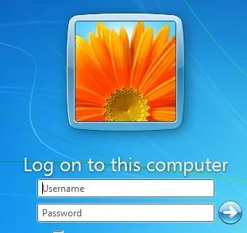
L’ús indegut de contrasenyes és una amenaça habitual.
Segons el cas, aquests atacs afecten la confidencialitat, la integritat o la disponibilitat.
Ara bé, protegir el sistema de l’exterior (Internet) no és suficient. Els atacs també poden venir des de dintre de l’organització:
treballadors descontents;
dispositius infectats;
algú que es cola a l’organització.
Protegir l’exterior……no evita els atacs des de dintreAlgú que es cola a l’organització
Els dispositius mòbils també poden comportar riscos:
aplicacions malicioses;
connexions a xarxes Wi-Fi públiques;
dispositius infectats que, en connectar-se, poden posar en risc la xarxa de l’organització.
Fins ara hem parlat sobretot d’atacs informàtics, però la resposta és que no sempre cal saber informàtica. Per fer malbé un equip n’hi ha prou amb un cop o amb destrossar-lo, i això afecta la disponibilitat i potser la integritat de les dades. A més, no tots els danys són intencionats: també poden ser accidents, com vessar un líquid o ensopegar amb un cable.
Per tant, s’han de protegir físicament els sistemes informàtics. Per exemple, sense corrent elèctric els sistemes s’aturen i la informació deixa d’estar disponible.
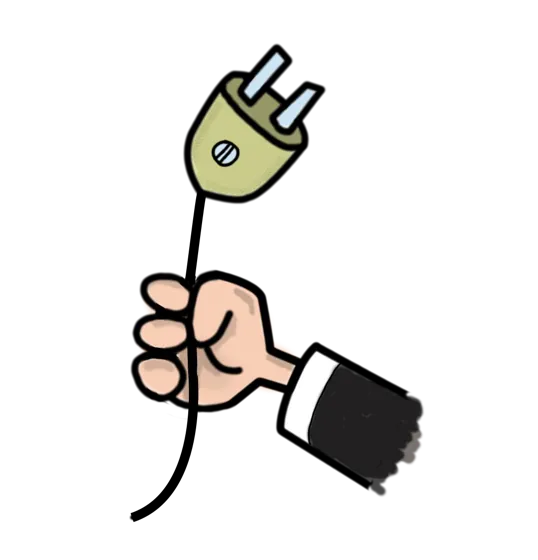
Sense corrent, els sistemes deixen de funcionar.
En un sistema informàtic és vulnerable tot allò que el forma: el maquinari, el programari, les dades i els usuaris.
Hem vist que els problemes poden ser físics (un cop, un tall de corrent, un accident) o informàtics (un virus, una contrasenya robada). Per organitzar les mesures de protecció, podem classificar la seguretat de dues maneres. Les dues classificacions es complementen: una diu què protegim i l’altra quina funció fa la mesura.
Criteri
Tipus
Què fa
Exemples
Segons què protegim
Física
Protegeix els equips i les instal·lacions.
Desastres naturals, robatoris, fallades de subministrament…
Lògica
Protegeix les dades, els programes i els accessos.
Virus, troians, malware, pèrdua de dades, atacs a servidors…
Segons la funció
Activa (per protegir-nos)
Prevé o detecta incidents.
Antivirus, tallafocs…
Passiva (per recuperar-nos)
Redueix els danys i facilita la recuperació.
SAI, còpies de seguretat…
La seguretat física comprèn els procediments i mecanismes de protecció del maquinari, tant de prevenció com de detecció. La seguretat lògica protegeix les dades, els programes i els accessos als sistemes informàtics.
Sovint el punt més feble d’un sistema no és la tecnologia, sinó les persones. En el món del hacking es fa servir l’enginyeria social: enganyar els usuaris perquè facin alguna cosa perjudicial o donin informació. L’exemple de la imatge és absurd, però si l’usuari s’ho creu, l’atacant aconsegueix fer malbé l’equip sense cap coneixement tècnic.
«Tirant cafè sobre l’ordinador, la connexió a Facebook va més ràpida.» «Ah, sí?»
La formació és fonamental per prevenir l’enginyeria social (per exemple: «no feu servir contrasenyes curtes!»), però també cal aplicar mesures tècniques de protecció.
1.8 Es pot protegir un sistema informàtic al 100 %?↑ índex
Amb totes aquestes mesures, podem dir que un sistema és totalment segur? La resposta és no. A finals dels anys 80, el professor Gene Spafford, de la Universitat de Purdue, ho va il·lustrar amb aquesta frase:
«L’únic sistema veritablement segur és aquell que està apagat, desconnectat, tancat en una caixa forta de titani, enterrat en un búnquer de formigó, envoltat de gas nerviós i vigilat per guàrdies armats i molt ben pagats… i fins i tot així, tinc els meus dubtes.»
La seguretat absoluta no existeix. Per això s’ha de suposar que en algun moment es produirà un incident de seguretat. La seguretat informàtica intenta prevenir incidents, reduir-ne els danys i estar preparats per recuperar-se’n.
A més, incrementar la seguretat costa diners i no totes les empreses necessiten un nivell alt de seguretat. L’objectiu és portar el risc a un nivell acceptable per a l’organització.
La seguretat no és només una qüestió tècnica: també és una obligació legal. Quan una empresa o un institut guarda dades de persones (noms, adreces, telèfons, notes…), la llei l’obliga a protegir-les i a respondre’n si es perden o es filtren. També hi ha lleis que regulen els serveis per Internet i els drets d’autor dels programes i continguts.
Protecció de dades personals
RGPD (UE 2016/679): normativa europea.
LOPDGDD (LO 3/2018): complementa el RGPD a Espanya.
Les mesures de seguretat s’adapten als riscos del tractament de les dades.
Altres lleis relacionades
LSSI-CE: serveis de la societat de la informació i comerç electrònic.
LPI: propietat intel·lectual i drets d’autor.
A més de complir la llei, les organitzacions necessiten saber com organitzar la seguretat a la pràctica. Per això existeixen els estàndards: documents elaborats per organismes internacionals (com ISO) que recullen bones pràctiques. No són lleis, sinó guies que expliquen què convé fer per organitzar la seguretat i els serveis de TI:
Estàndard
Què és
Exemples del que tracta
ISO/IEC 27002
Guia de bones pràctiques amb controls de seguretat de la informació.
Control d’accessos, còpies de seguretat, seguretat física, gestió d’incidents.
ITIL
Marc de bones pràctiques per a la gestió de serveis de TI.
Gestió d’incidències, gestió de canvis, disponibilitat dels serveis, funcionament ordenat i fiable.
Recorda: la ISO/IEC 27002 no és certificable; la ISO/IEC 27001 sí. La versió vigent de la 27002 és la del 2022. Que una norma sigui certificable vol dir que una entitat externa pot revisar (auditar) l’organització i donar-li un certificat que acredita que la compleix.
Com que la seguretat absoluta no existeix (ho hem vist a l’apartat 1.8), cal estar preparats per quan passi un incident. Un pla de contingència defineix què cal fer quan hi ha un desastre per restaurar el sistema com més aviat millor i amb la mínima pèrdua de dades. Pot cobrir situacions com una fallada de maquinari, un atac informàtic, un incendi o un error humà.
Un pla de contingència no és només un document: s’ha de preparar, provar, executar i revisar. Té cinc fases:
1 · Avaluació Analitzar riscos i actius crítics.
2 · Planificació Dissenyar el pla i els procediments.
3 · Proves Simulacres per comprovar que funciona.
4 · Execució Aplicar el pla quan hi ha l’incident.
5 · Recuperació Tornar a la normalitat i restaurar serveis.
Perquè el pla funcioni de debò quan arribi el moment, cal aplicar aquestes mesures:
Mesura
En què consisteix
Redundància
Duplicar elements crítics: RAID, servidors o connexions de reserva.
Distribució
No concentrar-ho tot en un sol lloc: còpies externes o al núvol.
Pla de recuperació
Procediments documentats per restaurar dades i serveis.
Personal preparat
Gent formada que sap què fer quan apareix la incidència.
Important: el RAID no substitueix les còpies de seguretat. Un RAID fa treballar diversos discos junts perquè, si se n’espatlla un, les dades no es perdin. Però si esborres un fitxer per error o un virus el fa malbé, el canvi es fa a tots els discos alhora. Per això també calen còpies de seguretat.
Igual que passa amb la seguretat en general, per elaborar un pla de contingència no cal començar de zero: ens podem basar en normes i guies reconegudes:
ISO 22301:2019: continuïtat del negoci, preparar l’organització davant d’interrupcions.
ISO/IEC 27031:2025: continuïtat dels sistemes informàtics i dels serveis TIC.
NIST SP 800-34 Rev. 1: guia pràctica per elaborar i mantenir plans de contingència informàtica.
Idea clau: els plans de contingència no s’improvisen: es planifiquen, es proven i es revisen seguint bones pràctiques reconegudes.
Autors i crèdits
Idea original: Xavier Sala Pujolar · Modificació: Amanda Fontana · Adaptació i reorganització: Eduard Gutiérrez.
Part II · Criteris 1.c i 1.d · Continguts 1.1 i 1.2
02 · Seguretat física
1.c Defineix les característiques de la ubicació física i les condicions ambientals dels equips i servidors → 1.1 Ubicació física i condicions ambientals dels equips i servidors.
1.d Identifica la necessitat de protegir físicament els sistemes informàtics → 1.2 Protecció física dels sistemes informàtics.
2.1 Per què és important la seguretat física?↑ índex
A l’apartat anterior hem vist que no n’hi ha prou amb protegir-se dels atacs informàtics: els equips també es poden espatllar, robar o fer malbé. D’això s’encarrega la seguretat física. En aquest apartat veurem què pot posar en risc els equips i les dades, i com ens en protegim davant de tres tipus d’amenaces: les accions humanes, les condicions ambientals i els desastres.
Suposem que aconseguim un sistema invulnerable al hacking. Seguiria en perill: algú el podria destrossar a cops, robar-lo, o simplement es podria espatllar. Contra aquest tipus d’atac no serveix cap antivirus.
Si falla el maquinari, el sistema pot deixar de funcionar i fins i tot podem perdre dades. Una avaria afecta principalment la disponibilitat, però també pot comprometre la integritat de les dades. Per això s’ha de protegir el maquinari.
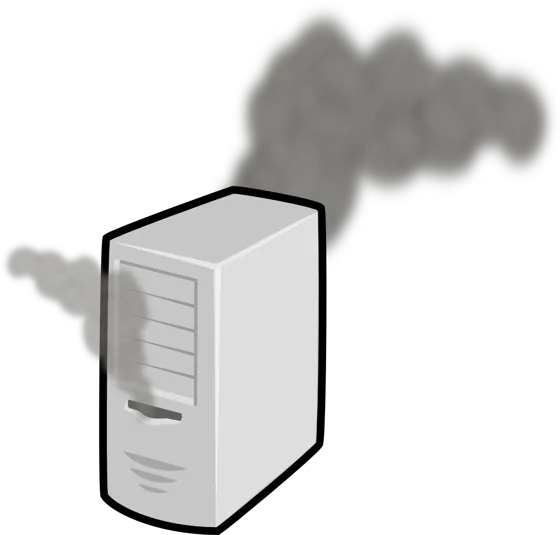
Una avaria pot aturar el servei.
2.2 Què pot posar en risc els equips i les dades?↑ índex
Els equips i les dades es poden perdre o fer malbé per sabotatges, robatoris, accidents, esborrat de dades i pèrdues. També els afecten el magnetisme, la humitat, la calor i l’electricitat.
Totes aquestes causes es poden agrupar en tres tipus d’amenaces, que estudiarem una per una:
Accions humanes
Errors, accidents, accessos no autoritzats, robatoris i sabotatges.
Condicions ambientals
Temperatura, humitat i pols.
Desastres naturals
Incendis, inundacions, talls de comunicacions i problemes elèctrics.
La primera font de problemes som les persones, tant si ho fem sense voler com si ho fem expressament. Molts incidents de seguretat són conseqüència d’errors humans: una mala instal·lació i configuració dels sistemes, usuaris amb poca informació, no seguir els procediments de seguretat o simples oblits. Molts incidents són accidents, no atacs intencionats.
La formació és essencial per prevenir molts errors humans. Exemples: no beure cafè davant de l’ordinador i no tapar les reixetes de ventilació dels equips.
L’accés físic a un equip facilita molt els atacs, però no sempre permet accedir a les dades (per exemple, si estan xifrades o protegides amb contrasenya). Tot i així, s’ha d’impedir als estranys l’accés als sistemes, i cal detectar els intrusos i dissuadir-los d’intentar-hi accedir. Per fer-ho tenim tres grups de mesures:
L’accés físic facilita robatoris i atacs.
Mesura
Exemples
Controls d’accés
Càmeres i llums, identificació, guàrdies, gossos.
Detecció d’intrusions
Sensors de moviment i alarmes de diferents tipus (foc, gas, inundacions/aigua…).
Mesures dissuasives
Obstacles i tanques, cartells, llums.
Control d’accés: identificacióDetecció: alarmesDissuasió: cartells
2.4 Condicions ambientals i ubicació dels equips↑ índex
Els equips informàtics són sensibles a l’entorn on es troben: la calor, la humitat o la pols els poden fer fallar encara que ningú els toqui. Per això les condicions ambientals són un problema que cal tenir en compte des del primer dia. Abans d’instal·lar els equips i servidors cal triar bé on els posem:
Ventilació
Evitar espais tancats i sense circulació d’aire.
Aigua i humitat
Allunyar els equips de possibles fuites i inundacions.
Accés físic
Restringir l’entrada a les zones amb equips crítics.
Temperatura
Evitar fonts de calor i facilitar la refrigeració.
Una bona ubicació física ajuda a prevenir avaries i incidents.
Els valors extrems de les condicions ambientals augmenten els errors en els components del maquinari. Els tres factors principals són la calor, la humitat i la pols.
La temperatura
Els canvis de temperatura provoquen dilatacions i contraccions dels materials. La calor excessiva pot reduir el rendiment i malmetre els equips, per això cal mantenir-los dins de les temperatures recomanades pel fabricant.
Component
Conseqüències d’un sobreescalfament
Processador
Reducció del rendiment o apagada de protecció.
Discs HDD i SSD
Errors de funcionament o possibles avaries.
Servidors i equips
Fallades i interrupcions del servei.
La humitat
La humitat té efectes negatius tant si n’hi ha massa com si n’hi ha poca:
Humitat alta: corrosió i curtcircuits.
Humitat baixa: descàrregues electrostàtiques.
La pols
La pols fa que els sistemes informàtics no funcionin correctament i pot arribar a malmetre components.
Climatització i ventilació.
Solució: climatització i ventilació
La climatització i la ventilació ajuden a mantenir unes condicions ambientals adequades:
Finalment, hi ha situacions greus que no depenen de nosaltres i que poden aturar tota l’organització: un incendi, un tall de les comunicacions o un problema elèctric. No les podem evitar del tot, però sí detectar-les a temps i reduir-ne els danys.
El foc
El foc és un dels desastres que causa més danys: pèrdua de dades i equipaments, perill per a la seguretat de les persones i aturada de l’empresa. A més de les flames, un incendi genera calor, cendra i pols que poden danyar els equips encara que no es cremin.
Un incendi genera calor, fum i residus.
Detectar
Extingir
Detectors de fum Detectors de flames Detectors de calor
Ruixadors automàtics Extintors Sistemes d’extinció per gas
Les comunicacions
A algunes empreses un tall en les comunicacions les deixa inservibles. Una de les possibles solucions és la redundància: tenir dues connexions, de manera que si un sistema falla, l’altre pot mantenir el servei.
Un tall de comunicacions pot aturar l’empresa.
L’electricitat
Els sistemes informàtics depenen totalment de l’electricitat. Els principals problemes elèctrics són els talls de subministrament, les sobretensions, les baixades de tensió i els microtalls. Per garantir el subministrament es fan servir:
GeneradorsLínies elèctriques de reserva
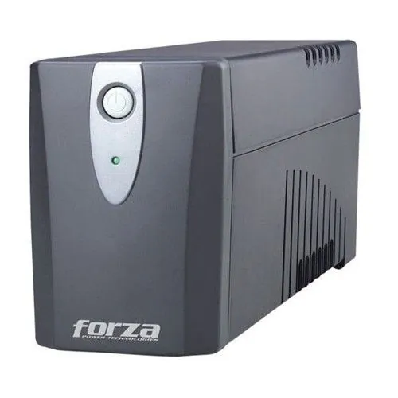
UPS / SAI
D’aquestes tres solucions, la més habitual als equips d’una oficina o d’una aula és el SAI, que estudiarem amb detall a l’apartat següent.
Autors i crèdits
Idea original: Xavier Sala Pujolar · Modificació: Amanda Fontana · Adaptació i reorganització: Eduard Gutiérrez.
Què aprendrem? A identificar la necessitat d’un SAI per protegir els equips dels problemes del subministrament elèctric, a conèixer els diferents tipus de SAI, a calcular quin SAI s’adapta a les nostres necessitats i a aplicar criteris per triar-lo.
Els sistemes informàtics depenen totalment de l’electricitat, i el subministrament elèctric pot tenir quatre problemes: falta de subministrament (tall de corrent), pujades de tensió, baixades de tensió i microtalls. Per garantir l’electricitat tenim tres solucions: generadors, línies extres i UPS / SAI.
En cas de tall de corrent, un SAI pot alimentar els sistemes connectats durant un temps, prou per acabar la feina i apagar els equips de manera segura o perquè arrenqui un generador.
3.2 Com funciona: del corrent altern a la bateria↑ índex
La xarxa elèctrica dona corrent altern (CA) a 230 V, però una bateria emmagatzema energia química i proporciona corrent continu (CC), normalment a 12 V. Per això el SAI té dues peces clau:
El carregador o rectificador passa el corrent de la xarxa de CA → CC per carregar la bateria.
L’inversor, quan falla la xarxa, passa la bateria de CC → CA perquè funcionin els equips.
Quan hi ha xarxa, el carregador manté la bateria carregada. Quan falla, la bateria dona CC i l’inversor la converteix en CA per als equips.
Xarxa 230 V CA → Carregador (CA → CC) → Bateria 12 V CC → Inversor (CC → CA) → Equips 230 V CA
Els SAI offline, line-interactive i online resolen problemes diferents:
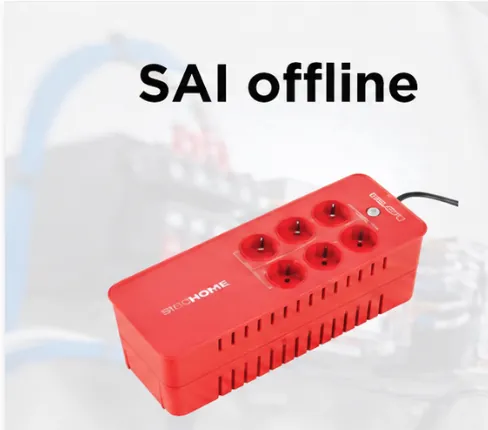
SAI offline
Els equips s’alimenten normalment de la xarxa. Si hi ha un tall, passa a bateria en uns mil·lisegons. És el més senzill i econòmic.
SAI line-interactive (interactiu)
Afegeix AVR: regulació automàtica del voltatge. Corregeix pujades i baixades moderades sense gastar bateria. Si hi ha un tall, passa a bateria en uns mil·lisegons.
SAI online
Doble conversió contínua: CA → CC → CA. L’inversor alimenta sempre els equips. Si falla la xarxa, el canvi és de 0 ms.
Offline → bàsic · Line-interactive → AVR · Online → màxima protecció i 0 ms de transferència.
Són tres de les característiques més rellevants d’un SAI i estan relacionades entre elles:
Càrrega: el conjunt d’equips que té connectats, és a dir, la suma dels W dels equips.
Autonomia: el temps que pot subministrar energia de la bateria a una càrrega concreta.
Capacitat: la potència màxima que pot subministrar a la seva càrrega.
3.6 Potència aparent (VA) i potència real (W)↑ índex
La capacitat de potència de sortida d’un SAI s’expressa amb dos valors. Per exemple, un model concret pot ser de 330 W / 700 VA.
La potència aparent (VA) és la que subministra el SAI cap a la càrrega: és la potència total que el SAI o la xarxa ha d’enviar perquè els watts reals funcionin.
La potència real (W) és la que consumeix realment la càrrega: la que necessiten els aparells per funcionar (la calor que fa un calefactor, la feina que fa el processador del PC).
Per escollir correctament un SAI hem de comprovar les dues dades: la potència real (W) i la potència aparent (VA). No n’hi ha prou amb una sola.
El factor de potència és la relació entre els W i els VA. S’expressa amb un número entre 0 i 1, on 1 vol dir que tota la potència aparent és potència real.
W = VA × FP ⇒ VA = W ÷ FP
En un SAI: els fabricants solen posar en gran a la caixa el valor en VA, però el que realment aguanta el nostre equip són els watts. Per exemple, si un ordinador té 300 VA i un factor de potència de 0,98: W = 300 VA × 0,98 = 294 W.
Exemple: imaginem dos SAI anunciats com a 1000 VA:
Model
Càlcul
Què aguanta
A · SAI econòmic (FP = 0,6)
1000 VA × 0,6 = 600 W
Només equips que sumin 600 W com a màxim (comptant sempre el marge).
B · SAI de millor qualitat (FP = 0,9)
1000 VA × 0,9 = 900 W
Equips de fins a 900 W.
FP = 1 és propi de SAI online d’alta eficiència, on els VA i els W coincideixen (p. ex., 1.000 VA = 1.000 W). Una relació W/VA més alta permet disposar de més potència real amb els mateixos VA, però no significa necessàriament que el SAI consumeixi menys energia o tingui un rendiment superior.
Quan un aparell indica amperes (A)
És habitual trobar V i A a les etiquetes de fonts d’alimentació, routers o switches. Llavors calculem els watts amb W = V × I × FP.
Exemple: router amb entrada de 230 V · 0,2 A.
Potència aparent: VA = V × I = 230 × 0,2 = 46 VA.
Si l’enunciat indica FP = 0,8: 230 × 0,2 × 0,8 = 36,8 W.
Si l’enunciat no indica FP: als nostres exercicis suposem FP = 1 → 46 W.
Atenció: les dades han de ser de l’entrada de 230 V, no de la sortida a 12 V. FP = 1 és una simplificació dels exercicis; no és el factor real de tots els aparells.
Equips amb A, W i VA en un mateix exercici. Primer convertim totes les dades a W; després sumem, apliquem el marge i passem a VA:
Equip
Dada de l’enunciat
Conversió a W
Router
230 V · 0,2 A · FP no indicat
230 × 0,2 × 1 = 46 W
Monitor
35 W
35 W
Torre
80 W
80 W
Impressora
100 VA · FP = 0,8
100 × 0,8 = 80 W
Total: 46 + 35 + 80 + 80 = 241 W · Marge del 25 %: 241 × 1,25 = 301,25 W · FP global = 0,8 → 301,25 / 0,8 = 376,56 VA.
El SAI transforma la CC de la bateria en CA per als equips, i en aquesta conversió es perd una part de l’energia en forma de calor. Per això els càlculs d’autonomia utilitzen l’energia útil, no només la teòrica. Per exemple: 100 Wh × 0,90 = 90 Wh útils; els 10 Wh restants es dissipen en calor.
El 90 % o el 95 % són hipòtesis si l’enunciat ho diu. En un cas real, cal consultar la fitxa tècnica o l’autonomia publicada pel fabricant.
Calcular l’eficiència a partir de l’autonomia
Si la fitxa del SAI no indica l’eficiència de l’inversor, potser ens dona l’autonomia a una càrrega determinada. Exemple: un SAI de 1350 VA i 810 W, amb 2 bateries (N = 2) de 12 V i 9 Ah. La fitxa diu que amb el SAI carregat al 75 % de la seva capacitat té una autonomia de 10 minuts.
Wh teòrics: N × V × Ah = 2 × 12 × 9 = 216 Wh.
Wh reals: Wh teòrics × η = 216 × η (η representa el factor global d’energia aprofitable a aquesta càrrega).
Fórmula de l’autonomia: Autonomia (min) = (Wh reals / P) × 60.
Potència de treball: el 75 % de 810 W → P = 0,75 × 810 = 607,5 W.
L’eficiència no augmenta de manera lineal, sinó que dibuixa una corba en forma de «U» invertida:
Càrrega
Eficiència
Per què?
🔴 Molt baixa (0 %–20 %) Ex.: un router de 15 W en un SAI de 1000 W.
Pèssima (40 %–60 %)
El SAI té un consum intern fix (pantalla LCD, circuits, sensors, ventilador). A càrregues molt baixes, aquest consum pot representar una part important de l’energia i reduir-ne el rendiment.
🟢 Mitjana (50 %–80 %) Ex.: treballar a mitja capacitat.
Punt òptim (85 %–95 %)
Els transformadors i l’electrònica de potència estan dissenyats per oferir el màxim rendiment en aquesta franja.
🟡 Màxima (90 %–100 %) Ex.: 810 W continus en un SAI de 810 W.
Torna a caure
Disminueix l’autonomia i augmenta l’exigència sobre les bateries i els components.
El rendiment pot variar amb la càrrega, però no existeix una corba ni uns percentatges universals per a tots els SAI: el valor concret depèn del model i s’ha de consultar a la fitxa tècnica.
La capacitat energètica teòrica depèn del nombre de bateries, del seu voltatge i dels seus amperes hora. Per obtenir la capacitat real la multipliquem per l’eficiència:
Energia teòrica (Wh) = N × V × Ah
Energia real (Wh) = Wh teòrics × eficiència = N × V × Ah × eficiència
Exemple: un SAI de 1.000 VA i 600 W amb dues bateries de plom de 12 V i 7 Ah connectades en sèrie, amb una eficiència del 95 %:
Voltatge total: 2 bateries × 12 V = 24 V.
Energia teòrica bruta: 24 V × 7 Ah = 168 Wh.
Amb l’eficiència: 168 Wh × 0,95 = 159,6 Wh reals.
L’eficiència real inclou les pèrdues per calor i el rendiment de l’inversor.
L’autonomia d’un SAI és el temps, en minuts o hores, que pot mantenir en funcionament els equips amb l’energia de la seva bateria quan es produeix un tall de llum. Normalment la donem en minuts.
Autonomia habitual: 5–10 min
Amb una càrrega normal. Serveix per a petits talls de llum i per guardar la feina, i poca cosa més.
Autonomia de continuïtat: de 30 min a hores
En servidors de dades, centres de telecomunicacions o sistemes crítics que no es poden aturar. Sovint mantenen el servei mentre s’engega un grup electrogen.
De què depèn l’autonomia? No és un valor fix:
Consum dels equips: més consum = menys autonomia. És el factor més determinant.
Capacitat de la bateria: més Wh o més Ah acostumen a donar més minuts.
Eficiència del SAI: menys pèrdues = més energia útil disponible.
Antiguitat de la bateria: amb el temps es degrada i dura menys.
Com calculem l’autonomia?
Primer passem les dades de la bateria a Wh; després dividim pel consum real (potència):
1 · Wh teòrics = N × V × Ah
2 · Wh útils = N × V × Ah × eficiència
3 · Autonomia (min) = (Wh útils / P) × 60
N = nombre de bateries · V = voltatge de cada bateria · Ah = capacitat de cada bateria · P = potència real consumida pels equips, en W · Eficiència: 90 % = 0,90.
Molt important: per calcular l’autonomia utilitzem els Wh reals i la P sense marge: el consum real dels equips. El marge només serveix per escollir la potència del SAI. És un càlcul simplificat: l’autonomia real s’ha de comprovar amb les dades del fabricant.
Exemple: un SAI de 1000 VA i 600 W amb N = 2, V = 12 V, Ah = 7 Ah i eficiència del 95 %. Els equips connectats consumeixen P = 350 W.
Wh teòrics = 2 × 12 × 7 = 168 Wh
Wh útils = 168 × 0,95 = 159,6 Wh
Autonomia = (159,6 / 350) × 60 = 27,4 min ≈ 27 min
Arrodonim l’autonomia cap avall: si posem 28 min, pensaríem que té més autonomia de la real (27,4 min). Si l’autonomia no és suficient, cal buscar un model amb més bateria o connectar menys equips.
Més consum, menys autonomia. Amb el mateix SAI (159,6 Wh útils estimats):
Per saber quin SAI és el més adequat hem de respondre aquestes preguntes:
Quina càrrega haurà de suportar?
Quanta autonomia volem tenir?
De quin espai disposem per ubicar-lo?
Quina tecnologia utilitzarem: offline, line-interactive o online?
Quin format físic: torre o rack?
Connectivitat i gestió: el port USB / RS-232 permet connectar el SAI al PC o al NAS i, amb programari com NUT (Network UPS Tools) o PowerChute, l’ordinador rep l’ordre d’apagar-se automàticament i de manera segura quan la bateria està a punt d’esgotar-se. La targeta de xarxa SNMP és útil en entorns corporatius per gestionar i supervisar el SAI a distància.
Tipus de preses: Schuko (l’endoll domèstic estàndard, per connectar qualsevol dispositiu sense adaptadors) o IEC C13/C14 (estàndard en servidors i sistemes professionals; requereix cables específics).
Preses amb bateria i preses només amb protecció de sobretensions, i quantes n’hi ha de cada tipus.
Forma de l’ona de sortida: sinusoïdal pura o simulada.
Preses SchukoConnectors IEC
Preses amb bateria i preses només per a sobretensions
No totes les preses d’un SAI ofereixen el mateix tipus de protecció:
Preses amb bateria: alimenten l’equip durant un tall de corrent. Són les que hem d’utilitzar per a l’ordinador, el monitor essencial, el NAS o el router.
Preses només per a sobretensions: protegeixen contra pics de tensió, però no donen autonomia quan marxa la llum. No són per a equips crítics que han de continuar funcionant.
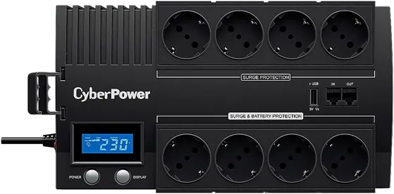
SAI interactiu CyberPower BR700ELCD (420 W) amb preses només de sobretensions i preses amb bateria i protecció de sobretensions.
Forma de l’ona de sortida
Ona sinusoïdal pura (pure sine wave): recomanada per a ordinadors amb fonts d’alimentació amb PFC actiu, servidors i equips sensibles. Ofereix més compatibilitat i redueix el risc d’apagades inesperades.
Ona simulada (pseudosinusoïdal): generalment més econòmica. Pot funcionar correctament amb molts equips, però algunes fonts d’alimentació poden presentar incompatibilitats.
Eines i programari
Per saber quant aguantarà un SAI amb els equips connectats, podem fer servir el selector de SAI de Lapara. És una eina comercial: confirma els W, els VA, les preses i els minuts a la fitxa de cada model.
Selector de SAI de Lapara.
El programari de gestió de SAI connecta el SAI amb els equips i actua quan falla la xarxa. Exemples: NUT (Network UPS Tools) i PowerChute.
3.12 Exemple pràctic complet: quin SAI hem de comprar?↑ índex
Volem comprar un SAI per a casa i donar cobertura a aquests equips. Tenim les dades de la fitxa tècnica d’un SAI:
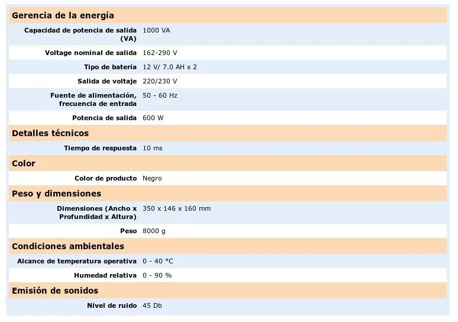
Fitxa original (en castellà).
Dada útil de la fitxa
Valor
Potència màxima de sortida
1.000 VA / 600 W
Nombre de bateries
2
Voltatge de cada bateria
12 V
Capacitat de cada bateria
7 Ah
Per a l’exercici suposem un consum de 350 W i una eficiència del 95 %. El 95 % és una hipòtesi afegida: la fitxa no el proporciona.
Pas 1 · Consum i marge. Ordinador 300 W + monitor 40 W + router 10 W = 350 W. Amb un marge del 25 % (per si canviem o afegim algun equip, o si un equip consumeix més del que indica la fitxa): 350 × 1,25 = 437,5 W → demanem almenys 438 W.
Per fer-ho bé, utilitzem el consum d’entrada dels equips (a la fitxa tècnica o a internet): mateixa marca i model! Altres maneres d’aplicar el marge: marge del 30 % → W × 1,30; càrrega màxima del 70 % → W ÷ 0,70.
Pas 2 · VA i elecció. L’enunciat dona FP = 0,7: VA necessaris = 437,5 ÷ 0,7 = 625 VA. El SAI ha de tenir com a mínim 438 W i 625 VA.
Pas 3 · Autonomia. Ara calculem amb el consum real, no amb la potència màxima del SAI: [(2 × 12 × 7 × 0,95) / 350] × 60 = 27,36 min → aproximadament 27 min.
Dada
Per a què serveix?
350 W de consum real
Calcular l’autonomia dels equips.
438 W amb marge
Escollir la potència mínima del SAI.
600 W màxims del SAI
Només serviria per calcular l’autonomia a plena càrrega.
Si connectem menys equips, tindrem més autonomia. Sempre revisem el pitjor cas: tots els equips essencials connectats alhora.
Quin SAI compleix la potència? Necessitem almenys 438 W i 625 VA:
Model fictici
Especificació
Compleix?
A
650 VA / 400 W
No: falten W
B
650 VA / 500 W
Sí
C
1.000 VA / 600 W
Sí
B i C serveixen per potència. Encara falta comprovar l’autonomia i les connexions.
Resum: els passos per escollir un SAI
Sumar els W dels equips essencials.
Afegir el marge de reserva acordat.
Comprovar els W i els VA del SAI.
Verificar els minuts al consum real.
Revisar les preses i configurar l’apagada segura.
Els passos 1–3 responen a la potència (quins equips suporta?) i el 4 a l’autonomia (durant quant de temps?).
Calculadora de potència
Calcula el consum amb marge i els VA necessaris. No estima l’autonomia: verifica-la a la càrrega real amb la fitxa del fabricant.
Tenim un SAI amb 1 bateria de 12 V i 9 Ah. Els equips consumeixen 500 W i el SAI admet aquesta càrrega en W i en VA. Suposem una eficiència del 90 % (0,90). Calcula els Wh totals, els Wh útils i els minuts d’autonomia.
Solució
Energia de la bateria: 1 × 12 × 9 = 108 Wh.
Energia útil: 108 × 0,90 = 97,2 Wh.
Autonomia amb 500 W: (97,2 ÷ 500) × 60 ≈ 11,7 minuts.
És una estimació teòrica, no una autonomia garantida.
Exercici 2 · Un lloc de treball
Un lloc de treball té un ordinador de 220 W, un monitor de 30 W i un router de 10 W. Marge: 25 %. FP donat: 0,7.
Calcula els W totals i els W amb marge.
Calcula els VA necessaris.
Tria entre dos SAI: A (500 VA / 300 W) o B (650 VA / 360 W). Justifica la tria comprovant els W i els VA per separat.
Solució
Consum total: 220 + 30 + 10 = 260 W.
Amb marge: 260 × 1,25 = 325 W.
VA necessaris: 325 ÷ 0,7 ≈ 464,3 VA.
El SAI A no compleix, perquè 300 W < 325 W.
El SAI B sí compleix: 360 W ≥ 325 W i 650 VA ≥ 464,3 VA.
Per calcular l’autonomia d’aquests equips utilitzaríem P = 260 W (sense marge).
Repte · Cerca d’un SAI per internet
L’empresa ens encarrega escollir un SAI per a un lloc de treball. Protegim l’ordinador, el monitor i el router: 350 W. Demana una autonomia mínima de 10 minuts amb una càrrega de 350 W i calen 3 preses amb bateria compatibles amb els equips. Criteris: marge del 25 % i FP suposat de 0,7. Compareu tres models reals: cerqueu «SAI fitxa tècnica autonomia» i confirmeu les dades al web del fabricant.
Dada
Model A
Model B
Model C
Marca, model i tipus
Potència: VA i W
Minuts a 350 W i font
Preses amb bateria i USB
Preu, data i enllaç
Compleix? Què falta confirmar?
Conclusió: escollim ______ perquè ______. Lliurament: taula + enllaços o captures + justificació de 3 frases.
Proposta de solució orientativa
Requisits: almenys 438 W, 625 VA i 10 min a 350 W. Amb aquestes dades, podem proposar que compleixen els requisits:
Una contrasenya és un conjunt de caràcters secrets que serveixen per verificar la identitat d’un usuari. És el mètode més estès per impedir accessos no autoritzats.
Una contrasenya escrita a la vista deixa de ser segura.
El mal ús és una amenaça habitual: contrasenyes fàcils d’esbrinar, repetides o enganxades en un adhesiu a la pantalla. Per això cal una política de contrasenyes: el conjunt de normes que estableix com es creen, s’utilitzen, es protegeixen i quan cal canviar les contrasenyes.
Idea clau: una contrasenya robusta però mal protegida deixa de ser segura.
Abans de definir normes, cal saber distingir una contrasenya bona d’una de dolenta. Una contrasenya és feble si és massa curta, si és una sola paraula habitual, el nom d’un familiar, una mascota o un personatge famós, una dada personal, si es reutilitza, si ja s’ha filtrat o si segueix patrons habituals (aaabbb, 1234, qwerty…).
Criteri
Contrasenya feble
Contrasenya robusta
Per què
Longitud
Menys de 12 caràcters
Mínim 12, millor 15 o més
Cada caràcter extra multiplica el temps d’un atac de força bruta.
Contingut
Una paraula del diccionari o l’enciclopèdia (gat, Barcelona)
Frase llarga o diverses paraules aleatòries sense relació
Els atacs proven primer diccionaris i llistes de noms.
Dades personals
Nom, mascota, data de naixement, equip de futbol, adreça
Cap dada que algú pugui trobar sobre tu
Qui et coneix, o mira les teves xarxes, ho prova primer.
Patrons
123456, qwerty, aaabbb, Contrasenya1!
Sense patrons ni trucs previsibles (a→@, o→0)
Els atacants coneixen aquests trucs i els apliquen automàticament.
4.3 Bones pràctiques per protegir les contrasenyes↑ índex
Criteri
Feble
Robusta
Per què
Reutilització
La mateixa contrasenya en diversos serveis
Una de diferent per a cada servei
Si es filtra un servei, els atacants la proven a tots els altres.
Filtrades
Apareix en una filtració coneguda (consulta haveibeenpwned.com)
No ha aparegut en cap filtració
Les llistes de contrasenyes filtrades són el primer que s’utilitza.
Gestió
Escrita en un post-it, al mòbil o en un fitxer sense protegir
Guardada en un gestor de contrasenyes
Permet usar contrasenyes llargues i úniques sense memoritzar-les.
Protecció extra
Cap
Amb verificació en dos passos (2FA)
Dificulta molt l’accés encara que es robi la contrasenya, però no elimina tots els riscos.
La guia NIST SP 800-63B-4 (actualitzada el 2025) recomana un mínim de 15 caràcters si la contrasenya és l’únic factor d’autenticació; amb MFA, el mínim pot ser de 8. No s’han d’imposar regles de composició (majúscules, símbols…) ni canvis periòdics obligatoris sense motiu.
4.4 Crear una contrasenya robusta i fàcil de recordar↑ índex
1 · Triar paraules Diverses paraules sense relació: «Núvol Pedra Violí Tren».
2 · Combinar-les En una frase llarga: NúvolPedraViolíTren.
3 · Afegir separadors i números Núvol-Pedra-Violí-Tren-52
4 · Comprovar-ne la longitud 25 caràcters: supera els 15 recomanats.
Idea clau: utilitzar una frase diferent per a cada servei.
No escriure-la en correus ni formularis no fiables.
No dir-la per telèfon ni compartir-la.
No posar pistes ni parlar-ne davant d’altres.
Canviar-la si sospitem que s’ha compromès o quan ho exigeixi una causa justificada (p. ex., una incidència de seguretat).
Enginyeria social: un atacant truca fent-se passar per l’administrador i demana la contrasenya. Si l’usuari s’hi refia i la dona, el sistema queda compromès. Recorda també que una contrasenya robusta deixa de ser segura si es deixa escrita a la vista.
4.6 El meu correu ha aparegut en alguna filtració?↑ índex
«Pwned» vol dir «compromès». En seguretat, indica que un compte o sistema ha estat exposat o controlat sense autorització. No vol dir que el compte estigui sent atacat ara mateix, sinó que les dades han aparegut en alguna filtració.
El web Have I Been Pwned (HIBP) permet comprovar-ho, i també té «Pwned Passwords», que diu si una contrasenya ja ha aparegut en filtracions.
Exemple pràctic (a classe no provem contrasenyes reals: fem servir exemples inventats):
Correu alumne.exemple@example.com → «Aquest correu apareix en 2 filtracions: una botiga online i una xarxa social antiga».
Contrasenya 123456 → molt dolenta: ja ha aparegut moltes vegades en filtracions. Una frase llarga és millor si és única, llarga i guardada en un gestor de contrasenyes.
Resposta correcta: canviar la contrasenya del servei afectat; si es reutilitzava, canviar-la també en altres serveis; activar el 2FA i revisar l’activitat del compte.
Idea clau: si el correu apareix en una filtració, cal comprovar quines dades s’han exposat, revisar la seguretat del compte i canviar les contrasenyes afectades. Filtració ≠ culpa de l’usuari, però reutilitzar contrasenyes sí augmenta el risc.
Un gestor de contrasenyes és un programa que guarda les contrasenyes xifrades i pot omplir formularis automàticament. Permet tenir una contrasenya diferent i robusta per a cada servei. Alguns exemples (n’hi ha molts altres, i cadascun té particularitats):
Bitwarden
Codi obert, versió gratuïta i núvol propi opcional.
Com funciona? Una única contrasenya mestra desbloqueja totes les altres: només cal recordar-ne una, però ha de ser molt robusta. La resta es guarden xifrades en un magatzem xifrat («vault»), que es pot sincronitzar entre dispositius. El generador crea contrasenyes llargues i aleatòries per a cada servei.
Les contrasenyes demanen recordar alguna cosa. Una alternativa, o un complement, és fer servir alguna cosa que la persona és. Els sistemes biomètrics verifiquen la identitat mitjançant l’anàlisi d’atributs físics o del comportament: autentiquen amb el propi cos. Poden complementar altres sistemes d’autenticació o facilitar l’accés als dispositius.
Atribut físic: alguna cosa que l’usuari és: empremta dactilar, retina, iris o cara.
Comportament: identifica patrons com la manera d’escriure amb el teclat, utilitzar el ratolí o caminar. Pot canviar amb el temps.
Funcionament: s’escaneja el patró i es compara amb una mostra model enregistrada prèviament.
Tipus
Què analitza
Empremta dactilar
Relleu dels dits de la mà. Característica única.
Palmell de la mà
Forma de la mà, línies del palmell o patrons de les venes.
Retina
Patró dels vasos sanguinis, capturat amb llum.
Iris
Porció acolorida de l’ull: anells i colors.
Reconeixement facial
Estructura òssia i distàncies de la cara.
Els sistemes basats en comportament poden variar amb el temps o ser falsificats.
Els sistemes biomètrics no són infal·libles. Poden cometre dos tipus d’error:
Fals positiu
El sistema accepta un impostor que hauria d’haver estat denegat. És l’error més perillós per a la seguretat.
Ex.: un sistema de reconeixement facial poc robust accepta una altra persona.
Fals negatiu
El sistema denega l’accés a un usuari legítim. Genera problemes d’ús i pot bloquejar persones autoritzades.
Ex.: un lector d’empremtes no reconeix el propietari perquè té el dit mullat o el sensor brut.
Aquests errors es mesuren amb dues taxes:
FAR · Taxa de falsos acceptaments: proporció d’intents d’accés d’impostors que el sistema accepta incorrectament.
FRR · Taxa de falsos rebutjos: proporció d’intents d’accés d’usuaris legítims que el sistema rebutja incorrectament.
Per què es produeixen?
Els sistemes comparen amb un llindar de similitud: si el baixes, augmenten els falsos positius; si el puges, augmenten els falsos negatius.
La qualitat de la captura (llum, angle, sensor brut) empitjora el resultat.
Alguns algorismes funcionen pitjor amb certs grups de població, perquè s’han entrenat amb dades poc diverses.
En identificació 1:N (buscar una persona en una base de dades molt gran) hi ha més oportunitats de coincidències falses que en una verificació 1:1 (com desbloquejar el teu mòbil).
Contrasenyes i biometria són dues maneres de demostrar qui som. Ara veurem com encaixen dins del procés complet d’accés a un sistema. Autenticar-se és demostrar que ets qui dius que ets abans d’accedir a un recurs. El procés té tres passos, sempre en aquest ordre:
1 · Identificació L’usuari diu qui és. Ex.: nom d’usuari o número de compte.
2 · Autenticació El sistema comprova que realment és aquesta persona. Ex.: contrasenya, atribut físic o una altra prova.
3 · Autorització Un cop validat, el sistema comprova què pot fer sobre cada recurs.
Unicitat: cada usuari ha de tenir un identificador diferent dins del sistema.
No descriptiva: el nom d’usuari no hauria de revelar privilegis o funcions sensibles del compte. Evitem identificadors previsibles com «admin» o «webadmin».
Gestió dels comptes: cal crear, modificar i desactivar els comptes segons les necessitats.
Exemple de convenció pràctica: nom d’usuari = nom + punt + primer cognom, sense accents ni caràcters especials.
Una contrasenya o un PIN. Econòmic, però algú la pot esbrinar.
Alguna cosa que tens
Possessió
Una clau, targeta o dispositiu. Es pot perdre o robar.
Alguna cosa que ets o fas
Característica
Empremta dactilar, retina, veu o comportament.
L’autenticació multifactor (MFA) combina factors de categories diferents, per exemple, una contrasenya i una targeta. Dues contrasenyes no constitueixen dos factors diferents.
4.13 Autorització: què pot fer cada usuari?↑ índex
L’autorització és la concessió d’un dret o permís perquè un usuari accedeixi a un recurs del sistema. L’administrador restringeix l’accés i limita què pot fer cada tipus d’usuari.
Exemple: Joan s’ha identificat i autenticat correctament i vol obrir un fitxer. El sistema comprova si Joan té autorització: si en té, el veu; si no, rep un missatge d’error.
Un rol és un conjunt de permisos associat a una funció o responsabilitat: «auditor», «administrador», «professorat», «alumnat». Serveixen per no haver de donar permisos usuari per usuari: si una persona canvia de funció, li canviem el rol i canvien els seus permisos.
Per exemple, un auditor pot llegir registres, però no modificar-los, i un administrador pot crear usuaris i canviar configuracions. Assignació: usuària Anna → rol Professorat → permisos llegir, crear i editar materials.
Idea clau: el rol determina què pot fer l’usuari segons la seva funció dins del sistema.
4.16 Rols, grups i permisos: no és el mateix↑ índex
Concepte
Què és
Exemple
Grup
Agrupa usuaris amb alguna característica comuna.
Grup «Professorat» o «Alumnat».
Rol
Defineix una funció i el paquet de permisos associat.
«editor», «lector», «administrador».
Permís
Acció concreta sobre un recurs.
Llegir, escriure, modificar, executar o eliminar.
Exemple: una persona pot tenir el rol «editor» en una carpeta i només «lector» en una altra.
Robustes, ben protegides i diferents per a cada servei. Un gestor en facilita l’ús segur.
Biometria
Autentica per atributs físics o de comportament, però pot fallar.
Autenticació i autorització
Primer identificar-se i autenticar-se; després comprovar els drets sobre el recurs.
Criteris d’accés
Rols, grups, localització, hora i tipus de transacció determinen qui pot fer què.
El control d’accés és una part essencial de la seguretat lògica.
Autors i crèdits
Idea original: Ivan Basart Carrillo, Carles Caño Valls i Carles Franquesa · Modificació: Amanda Fontana · Adaptació, modificació i reorganització: Eduard Gutiérrez.
Contingut 1.8 Permisos i drets d’usuaris. (No té criteri d’avaluació específic.)
Objectiu: entendre com controlar qui pot llegir, modificar o executar fitxers i carpetes, a Linux (propietari, grup i altres; chmod, chown, chgrp i umask) i a Windows (permisos NTFS, herència, pestanya Seguretat).
Usuari: és el compte amb què entres al sistema. Té nom d’usuari, contrasenya i permisos. Exemple: alumne, joan, anna.
Grup: conjunt d’usuaris que comparteixen permisos o una funció. Exemple: alumnes, profes, administradors.
Carpeta personal: cada usuari té el seu espai de treball. Normalment és /home/alumne. A Windows també en tens una, per exemple C:\Users\alumne.
Idea clau: a Linux treballes com a usuari dins la teva carpeta personal, però pots accedir a altres carpetes sempre que tinguis els permisos necessaris.
Primeres ordres per orientar-te
Abans de treballar amb permisos, cal saber on som i moure’ns pel sistema:
Ordre
Per a què serveix
pwd
On soc? Mostra la carpeta actual.
ls
Què hi ha dins? Mostra els fitxers i carpetes del directori actual.
cd
Entrar en una carpeta o anar a una ruta concreta. cd .. puja un nivell.
mkdir / touch
Crear una carpeta / crear un fitxer buit.
nautilus .
Obre la carpeta actual a l’explorador gràfic.
$ pwd
/home/alumne
$ ls
Documents Descarregues Imatges
$ cd Descarregues
$ cd .. # puja un nivell
$ cd /home # ruta concreta
$ mkdir proves
$ cd proves
$ touch hola.txt
Exemple pas a pas: soc a /home i vull anar a /home/alumne/Descarregues i tornar enrere.
$ pwd
/home # encara no soc dins Descarregues
$ cd alumne/Descarregues
$ pwd
/home/alumne/Descarregues
$ cd .. # amb dos punts puges un nivell
$ pwd
/home/alumne
Ruta absoluta i ruta relativa
Són dues maneres vàlides d’arribar a la mateixa carpeta:
Ruta absoluta: comença sempre des de l’arrel del sistema (/) i serveix encara que estiguis en qualsevol altra carpeta. És com donar l’adreça completa: cd /home/alumne/Descarregues.
Ruta relativa: depèn d’on ets ara mateix; només escrius la part del camí que falta. Si ets a /home/alumne: cd Descarregues.
A Windows: ruta absoluta C:\Users\alumne\Descarregues · ruta relativa Descarregues.
Idea clau: si una ruta comença per «/», és absoluta; si no, depèn de la carpeta on ets. El terminal i l’explorador gràfic no són excloents: pots treballar de les dues maneres. Per fer permisos, cal saber qui és l’usuari, en quina carpeta som i quin fitxer volem modificar.
A Linux, els permisos decideixen qui pot llegir, modificar o executar un fitxer, i qui pot entrar, llistar o modificar un directori. Tot gira al voltant de tres tipus d’usuaris: u (user, el propietari), g (group, el grup) i o (others, la resta).
Què passa quan es crea un fitxer? Amb touch fitxer.txt, o amb qualsevol programa que creï un fitxer, el nucli assigna:
Propietari: l’usuari que executa el procés (l’UID efectiu).
Grup: el grup efectiu del procés (el GID efectiu). Per defecte és el grup primari de l’usuari.
Permisos: els que resulten d’aplicar la umask als permisos base. Els fitxers parteixen de 666 i els directoris de 777. Amb la umask habitual 022, un fitxer queda 644 i un directori 755.
Veure els permisos: ls -l
$ ls -l
-rw-rw-r-- 1 archie web 220 Jul 5 17:37 notes.txt
drwxr-xr-x 6 archie web 4096 Jul 5 17:37 Documents
Hi veiem el propietari (qui genera o crea el fitxer o carpeta), el grup (diversos usuaris poden compartir privilegis comuns) i, implícitament, la resta d’usuaris (els que no són ni el propietari ni membres del grup).
Com es llegeix una línia de ls -l? Prenem -rw-r--r-- 1 eduard eduard 177 Apr 13 13:52 create_dummy_file.cpp:
Elementar, estimat alumne!
Camp
Valor
Tipus de fitxer i permisos
-rw-r--r--
Nombre d’enllaços
1
Usuari propietari
eduard
Grup propietari
eduard
Mida en bytes
177
Data de modificació
Apr 13 13:52
Nom del fitxer/directori
create_dummy_file.cpp
El primer caràcter és el tipus: - fitxer, d directori, l enllaç (link). Després hi ha tres blocs de tres permisos (lectura, escriptura, execució):
Tipus
Usuari (propietari)
Grup
Altres
-
r
w
-
r
-
-
r
-
-
fitxer
SÍ
SÍ
NO
SÍ
NO
NO
SÍ
NO
NO
El propietari (eduard) pot llegir i escriure; el grup propietari (eduard) només pot llegir; la resta d’usuaris del sistema només pot llegir.
Qui soc? L’ordre id
$ id
uid=1000(archie) gid=1000(web) groups=1000(web),4(adm),20(dialout),24(cdrom),29(audio)
id mostra la identitat de l’usuari amb qui s’executa l’ordre: qui ets i a quins grups pertanys, amb els números i els noms.
uid=1000(archie): UID, identificador numèric de l’usuari i el seu nom.
gid=1000(web): GID, el grup primari, que és el que reben els fitxers nous que crees.
groups=…: tots els grups als quals pertanys, el primari i els secundaris. Els secundaris, com sudo o users, serveixen per tenir accés a fitxers i recursos que ja existeixen. Per exemple, pertànyer a sudo et permet usar sudo.
Idea clau: un fitxer només té un propietari (usuari) i un únic grup propietari. Els permisos de grup (g) només s’apliquen a aquest grup. Amb els permisos clàssics no es poden assignar permisos a dos o més grups diferents.
Permisos en fitxers i directoris
Els mateixos permisos signifiquen coses diferents segons si s’apliquen a un fitxer o a un directori:
Permís
Sobre un fitxer
Sobre un directori
r · Lectura
Llegir-ne el contingut (cat, less).
Llistar-ne el contingut (ls).
w · Escriptura
Modificar-lo.
Crear i canviar noms dels fitxers que conté.
x · Execució
Executar-lo com a programa o script.
Entrar-hi (cd) i accedir als fitxers que conté.
Compte: per esborrar un fitxer cal permís w i x sobre el directori que el conté, no necessàriament sobre el fitxer.
L’ordre chmod serveix per canviar els permisos d’un fitxer o d’un directori. Es pot utilitzar de dues maneres: amb números (mètode numèric) o amb lletres (mètode simbòlic).
Mètode numèric
Cada grup de permisos són 3 bits, i cada posició té un pes: esquerra 4, mig 2, dreta 1. Un bit a 1 vol dir permís activat; a 0, desactivat.
Amb tres xifres donem els permisos del propietari, del grup i dels altres. Per exemple, chmod 754 fitxer → 7 propietari (rwx) · 5 grup (r-x) · 4 altres (r--).
Valor
Permís
Descripció
0
---
Cap permís
1
--x
Només execució de fitxers o accés a directoris
2
-w-
Només escriptura
3
-wx
Escriptura i execució de fitxers o accés a directoris
4
r--
Només lectura
5
r-x
Lectura i execució de fitxers o accés a directoris
6
rw-
Lectura i escriptura
7
rwx
Lectura, escriptura i execució de fitxers o accés a directoris
Ordre
Resultat
Significat
chmod 755 script.sh
-rwxr-xr-x
Executable per tothom; només el propietari el modifica.
chmod 644 document.txt
-rw-r--r--
Tothom pot llegir; només el propietari pot editar.
chmod 600 arxiu_private.key
-rw-------
Lectura i escriptura només per al propietari.
chmod -R: recursió
chmod 755 carpeta canvia només els permisos de la carpeta mateixa: els fitxers i subcarpetes de dins no canvien. Si ho vols aplicar a tot el contingut interior, incloent subcarpetes i fitxers de tots els nivells, has d’usar l’opció recursiva -R:
$ chmod -R 755 /el_meu_projecte
Avís de seguretat: és molt útil, però un error pot canviar la seguretat de molts fitxers de cop.
Mètode simbòlic (lletres)
Usuaris
Permisos
Operador
u propietari
r lectura
+ afegeix
g grup
w escriptura
- treu
o altres
x execució
= estableix exactament
a tots
Sintaxi: chmod [u|g|o|a] [+|-|=] [r|w|x][,...] fitxer. Per exemple, chmod u+rwx,g+rx script.sh: el propietari obté lectura, escriptura i execució, i el grup obté lectura i execució.
Ordre
Què fa
chmod u+x script.sh
Afegeix execució només al propietari.
chmod o=r arxiu.conf
Altres queden exactament amb només lectura.
chmod g-w document.txt
Treu escriptura només al grup.
chmod a+r arxiu.zip
Afegeix lectura a tothom.
Avís de seguretat:+ i - modifiquen els permisos existents, però els que ja hi eren es mantenen: podries estar «arrossegant» alguna x o algun altre permís que no sabies que hi era. = substitueix els permisos del tipus d’usuari indicat i deixa exactament els que escrius.
Treure i restaurar permisos amb =. Quan no escrivim cap lletra després de =, deixem aquell bloc sense permisos. Per revertir-ho, tornem a assignar els permisos exactes:
# Abans
drwxr-xrw- 6 archie web Documents
$ chmod g= Documents
$ chmod o= Documents
# Després
drwx------ 6 archie web Documents
# Restaurar
$ chmod g=rx Documents
$ chmod o=rw Documents
# Després
drwxr-xrw- 6 archie web Documents
Números o símbols? El mètode simbòlic és còmode al dia a dia, quan només volem afegir o treure un permís concret (chmod +x script.sh). El mètode numèric, més habitual en servidors i scripts, garanteix l’estat exacte dels permisos, independentment del valor inicial.
chown canvia el propietari del fitxer. Pot requerir sudo.
sudo chown joan:desenvolupament document.txt
chown usuari:grup canvia alhora propietari i grup.
chgrp desenvolupament document.txt
chgrp canvia només el grup associat al fitxer.
sudo (superuser do) permet que un usuari autoritzat executi una ordre amb els privilegis de root (o d’un altre usuari) sense haver d’iniciar sessió com a administrador. Exemple: sudo apt update actualitza la llista de paquets amb privilegis d’administrador.
La umask és la màscara que decideix amb quins permisos neixen els fitxers i directoris nous. Els màxims per defecte són 666 per als fitxers i 777 per als directoris, i la màscara en treu els permisos:
En molts Ubuntu clàssics es veia 0022 com a valor típic, però 0002 també és normal en sistemes moderns. Sol aparèixer quan Ubuntu fa servir l’esquema de User Private Groups: cada usuari té el seu propi grup principal amb el mateix nom. En aquest context, permetre escriptura al grup no vol dir que «tots els usuaris» puguin escriure, perquè el grup sol contenir només aquest usuari:
$ id
uid=1000(eduard) gid=1000(eduard) groups=1000(eduard),4(adm),20(dialout),24(cdrom),1001(web), …
Amb la màscara 0002, un fitxer nou queda rw- rw- r-- (664) i una carpeta nova rwx rwx r-x (775).
A Windows, els permisos NTFS decideixen qui pot fer què sobre fitxers i carpetes en les unitats formatades amb NTFS. S’organitzen en una ACL: una llista de permisos assignats a usuaris i grups concrets.
Permís
Què permet
Control total
Tot: llegir, escriure, esborrar, canviar permisos i prendre propietat.
Modificar
Llegir, escriure i esborrar; no permet canviar els permisos.
Lectura i execució
Veure el contingut i executar programes.
Mostrar contingut de la carpeta
Llistar fitxers i subcarpetes (només carpetes).
Lectura
Veure el contingut, els atributs i els permisos.
Escriptura
Crear fitxers/carpetes i escriure dades.
Els permisos s’assignen a usuaris i grups concrets, i cada permís es pot Permetre o Denegar.
Modificar permisos en una carpeta o fitxer
1 · Clic dret Sobre la carpeta o fitxer.
2 · Propietats Obrir la finestra de propietats.
3 · Seguretat Entrar a la pestanya Seguretat.
4 · Edita Modificar permisos bàsics.
5 · Afegeix / Treu Seleccionar usuari o grup.
6 · Permetre / Denegar Marcar permisos i aplicar.
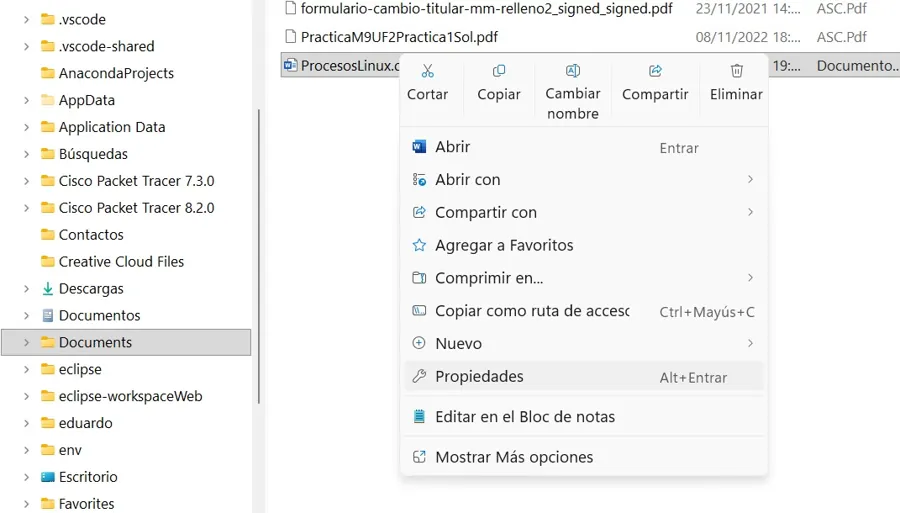
Passos 1 i 2: clic dret → PropietatsPas 3: pestanya SeguretatPassos 4 a 6: Edita, usuari o grup, Permetre/Denegar
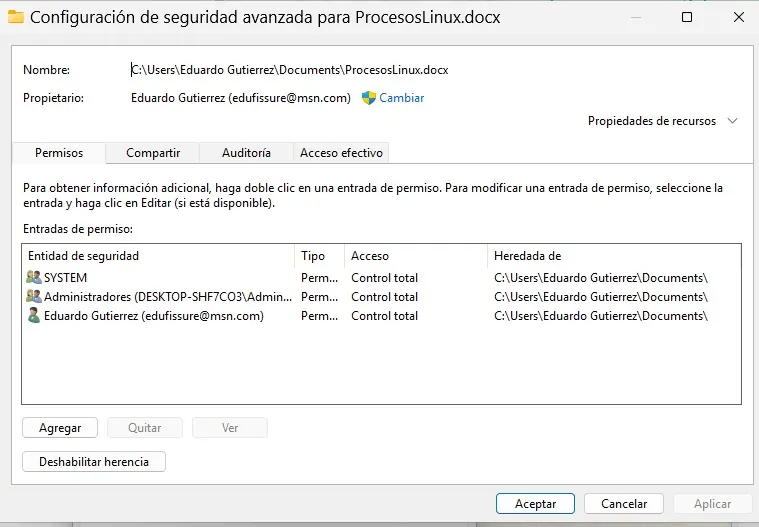
Seguretat → Avançat: permisos especials, propietari i herència
Herència, propietat i compartició
Herència: les subcarpetes i fitxers hereten els permisos de la carpeta pare. Es pot trencar a Avançat → Desactiva l’herència.
Propietari: cada objecte té propietari. Un administrador en pot prendre la propietat (takeown).
Compartició + NTFS: per xarxa s’apliquen els permisos de compartició i els NTFS, i preval el més restrictiu.
Denegar preval: els permisos dels grups es poden acumular. En general, Denegar té prioritat, però el resultat també depèn dels permisos explícits i heretats.
Establiu la màscara inicial 022 abans de crear els primers fitxers i carpetes.
Creeu la carpeta capitol5, entreu-hi i mostreu els permisos.
Mostreu la umask.
Creeu el fitxer fic1 i el directori dir1.
Canvieu la màscara a 027.
Creeu el fitxer fic2 i el directori dir2 (fic2 i dir2 pengen directament de capitol5, no de dir1).
Verifiqueu els nous permisos i comproveu si fic1 i dir1 han canviat.
Solució
# Passos 1-2: fico la umask per defecte per si de cas
$ umask 022
$ mkdir capitol5
$ cd capitol5
# Veiem el que hi ha dins de la carpeta, en teoria res
$ ls -l
# Passos 3-4: miro la màscara actual
$ umask
# Creo el fitxer fic1 amb touch i la carpeta dir1 amb mkdir
$ touch fic1
$ mkdir dir1
$ ls -l # per veure els permisos de la carpeta actual: ls -ld .
# Passos 5-6: canviem la màscara per defecte a 027
$ umask 027
$ touch fic2
$ mkdir dir2
# Pas 7
$ ls -l
fic1 i dir1 mantenen els seus permisos; com que s’han creat amb una altra umask, fic2 i dir2 tenen uns permisos per defecte diferents.
Important:ls -ld dir1 mostra els permisos del directori; ls -l dir1 mostra el seu contingut.
Pràctica 2 · Permisos dels directoris (15 minuts)
Doneu permisos rwx als altres usuaris a la carpeta dir1 amb notació simbòlica…
…i repliqueu-ho a la carpeta dir2 amb notació octal.
Creeu la carpeta /tmp/<usuari> (<usuari> és el teu nom d’usuari)…
…i un fitxer secret ocult dins d’aquest directori.
Deixeu només permís de lectura a l’usuari <usuari> sobre secret. Utilitzeu notació octal.
Connecteu-vos com <usuari>2…
…i comproveu si podeu llegir o suprimir secret. Justifiqueu-ho. (Aquests dos passos són per més endavant, quan sapigueu gestionar usuaris i grups.)
Solució
# Passos 1-2
$ cd ~/capitol5
$ chmod o=rwx dir1 # o bé: chmod o+rwx dir1
$ chmod 007 dir2
L’enunciat no diu res dels permisos d’usuari i grup a dir2, de manera que es podria posar qualsevol cosa; aquí ens cenyim a l’enunciat i només donem permisos als altres.
# Passos 3-4: l’usuari de Linux surt al terminal (p. ex.: eduard)
$ mkdir /tmp # si /tmp ja existeix pot donar error, però no passa res
$ cd /tmp
$ mkdir eduard # mkdir <el_meu_usuari>
$ cd eduard
$ touch .secret # els fitxers i carpetes ocults comencen per .
# Pas 5: només lectura a l’usuari: r-- = 100 = 4; la resta a zero
$ chmod 400 .secret
Passos 6-7 (per més endavant): crear un usuari2, iniciar sessió amb aquest usuari, anar a /tmp/usuari, fer ls -al i mirar si es veu el fitxer ocult.
Pràctica 3 · Permisos de fitxers i directoris (20 minuts)
Torneu a /home/<usuari>/capitol5, poseu umask 002 i creeu la carpeta docpersonal amb permisos 700.
Creeu les carpetes fica, ficb, ficc i ficd dins de docpersonal i llisteu en format detallat.
Canvieu els permisos de fica a 755, de ficb a 700, de ficc a 750 i de ficd a 777. Comproveu el resultat amb ls -ld.
Dins de fica, creeu el fitxer prova.txt i comproveu els seus permisos. Després canvieu-los a 600 i finalment a 644. En cada cas, expliqueu quins permisos té cada tipus d’usuari sobre el fitxer.
Solució
# Pas 1
$ cd /home/usuari/capitol5
$ pwd # per assegurar-me on soc
$ umask 0002
$ mkdir docpersonal
$ chmod 700 docpersonal
# Pas 2
$ cd docpersonal
$ pwd # dins de capitol5/docpersonal
$ mkdir fica
$ mkdir ficb
$ mkdir ficc
$ mkdir ficd
$ ls -l
# Pas 3
$ pwd
$ chmod 755 fica
$ chmod 700 ficb
$ chmod 750 ficc
$ chmod 777 ficd
$ ls -ld fica ficb ficc ficd
# Pas 4
$ cd fica
$ touch prova.txt
$ ls -l
$ chmod 600 prova.txt
$ ls -l
$ chmod 644 prova.txt
$ ls -l
Annex I · Gestionar usuaris a Linux (avançament de Sistemes operatius)
Amb la interfície gràfica (Ubuntu):
Obrir Configuració: menú del sistema (a dalt a la dreta) → rodeta «Ajustos».
Entrar a Usuaris (o Comptes d’usuari).
Desbloquejar: si surt el botó «Desbloca» és perquè no tenim prou permisos; cal autenticar-se com a administrador.
Afegir usuari: botó «Afegeix usuari» o «+».
Triar el tipus: estàndard o administrador, segons el rol.
Crear la contrasenya i comprovar que pot iniciar sessió.
Segons la distribució Linux, els noms exactes dels menús poden variar.
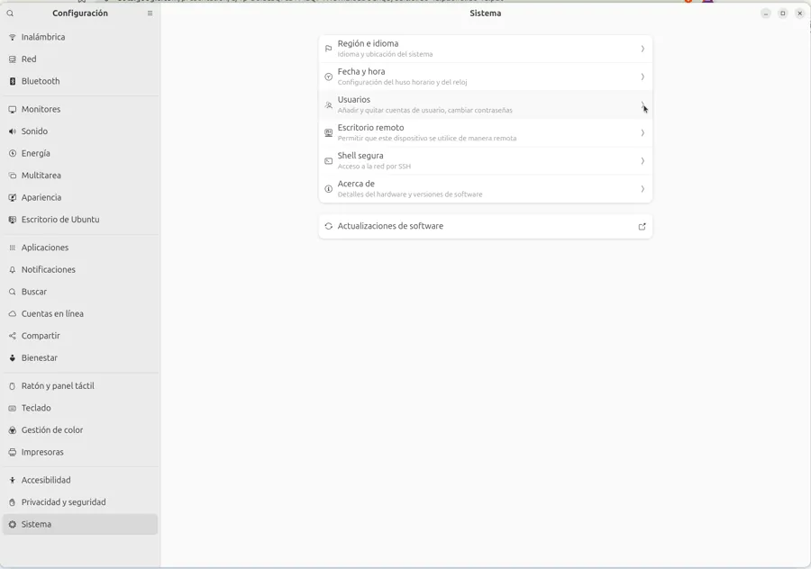
Configuració d’Ubuntu
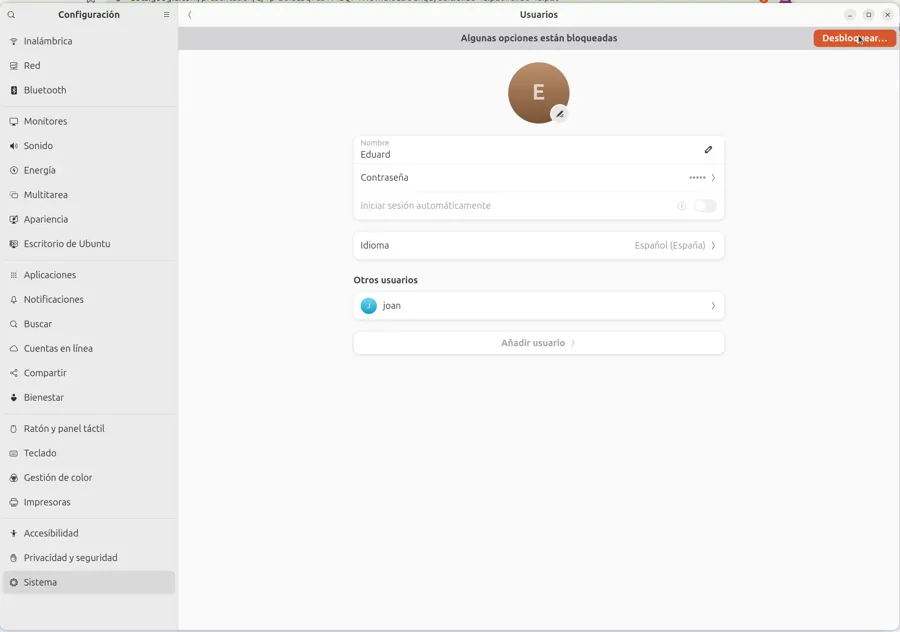
Apartat Usuaris
Amb el terminal (Debian/Ubuntu):
# Crear un usuari
sudo adduser joan
# Comprovar informació de l'usuari
id joan
getent passwd joan
# Eliminar l'usuari
sudo deluser joan
# Eliminar usuari i carpeta personal
sudo deluser --remove-home joan
# També es pot fer amb:
sudo useradd -m joan
sudo passwd joan
adduser és més senzill i recomanable a Ubuntu; useradd és més tècnic i sovint requereix opcions addicionals. Amb deluser --remove-home també s’esborra la carpeta personal.
# Crear un grup
sudo groupadd desenvolupament
# Afegir joan al grup sense treure altres grups
sudo usermod -aG desenvolupament joan
# Treure joan del grup
sudo gpasswd -d joan desenvolupament
# Comprovar
id joan
# Eliminar el grup
sudo groupdel desenvolupament
# També es pot fer amb:
sudo adduser joan desenvolupament
sudo deluser joan desenvolupament
Important:-a és imprescindible: sense -a, -G pot substituir els grups secundaris de l’usuari.
Annex II · Crear un usuari i un grup a Windows (avançament de Sistemes operatius)
Al terminal de Windows executeu lusrmgr.msc. Si cliqueu sobre Grups, podeu veure els grups del sistema, afegir-ne, afegir persones a un grup, eliminar-ne…
lusrmgr.msc està disponible a Windows Pro, Enterprise i Education, però no a Home.
Usuaris i grups locals
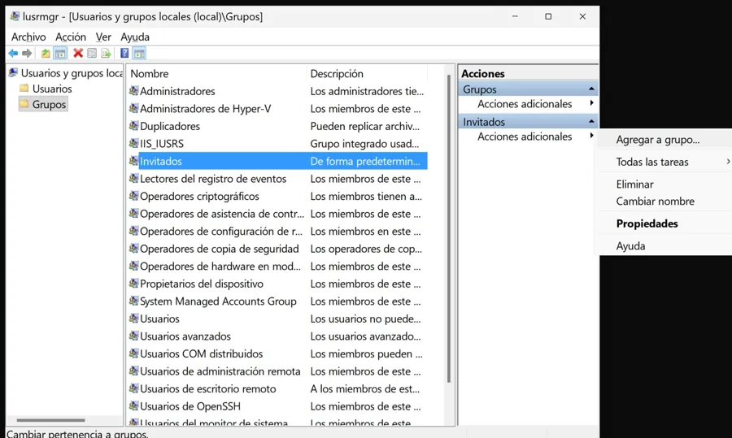
Grups del sistema
Autors i crèdits
Idea original: Ivan Basart Carrillo, Carles Caño Valls i Carles Franquesa · Modificació: Amanda Fontana · Adaptació, modificació i reorganització: Eduard Gutiérrez.
06 · Llistes de control d’accés i polítiques de seguretat
El control d’accés respon una pregunta: qui pot fer què sobre quin recurs? Després d’identificar i autenticar una persona, el sistema comprova si està autoritzada a llegir, modificar o utilitzar el recurs. Una llista de control d’accés permet expressar aquestes decisions amb regles concretes.
Per què necessitem ACL?
A Linux, els permisos tradicionals distingeixen propietari, grup i altres. Són útils, però una excepció per a un usuari concret pot ser difícil de representar sense ampliar l’accés a més persones.
Per exemple, Anna és propietària d’informe.txt i pot llegir-lo i escriure-hi; el grup profes el pot llegir i els altres no hi tenen accés. Joan no és Anna ni pertany al grup, però necessita llegir aquest fitxer. chmod o+r donaria lectura a tots els altres, no només a Joan. Una ACL permet afegir-hi una entrada concreta per a ell.
Canviar el grup del fitxer per un altre que inclogui Joan també requereix reorganitzar els membres perquè el grup profes conservi la lectura. Fer Joan propietari canviaria qui té el control del fitxer. L’entrada ACL permet concedir-li l’excepció mantenint l’Anna com a propietària.
En un altre cas, el professor és propietari de la carpeta Pràctica i el grup alumnat només la pot consultar. Maria pertany al grup, però necessita modificar la carpeta. Donar escriptura a tot el grup ampliaria els drets de tots els alumnes; una entrada específica permet definir l’excepció per a Maria.
Qui?
Permís desitjat a Pràctica
Professor, propietari
Control de la carpeta.
Grup alumnat
Consultar-la.
Maria, membre d’alumnat
Consultar i modificar.
Resta d’usuaris
Sense accés.
Si es dona escriptura a tot alumnat, tots els membres la reben; si s’assigna un altre grup a la carpeta, cal preservar l’accés dels alumnes. Amb una ACL es pot donar l’excepció a Maria. En una carpeta, consultar els noms i entrar-hi requereix habitualment r i x.
Matriu d’accés, ACL i ACE
Una matriu d’accés organitza els subjectes en files, els recursos en columnes i els drets a les cel·les. Una ACL (Access Control List) organitza les regles per recurs. Una ACE és cadascuna de les entrades de la llista. Una llista de capacitats, en canvi, organitza els drets per subjecte.
ACE
Subjecte
Acció
Permisos a Pràctica
1
Joan
Permetre
Llegir
2
Maria
Permetre
Llegir i escriure
3
Alumnat
Permetre
Llegir
A Windows NTFS les ACE poden permetre o denegar. Les ACL POSIX de Linux amplien propietari, grup i altres amb entrades per a usuaris o grups concrets; no tenen entrades explícites de denegació. Si els permisos efectius no permeten l’acció, l’accés es denega.
ACL mínima i ACL estesa a Linux
Una ACL mínima equival als permisos bàsics. Quan s’afegeixen entrades amb nom apareix una ACL estesa amb una màscara:
La màscara limita els permisos efectius dels usuaris i grups amb nom i del grup propietari; no limita el propietari ni els altres. El signe + a ls -l indica habitualment una ACL addicional. getfacl en mostra les entrades completes:
$ ls -l informe.txt
$ getfacl informe.txt
Com es calcula automàticament la màscara?
La màscara és el límit màxim dels permisos efectius de les entrades afectades. Afecta el grup propietari (group::) i els usuaris i grups amb nom (user:nom: i group:nom:). No limita l’entrada del propietari (user::) ni la d’altres (other::).
Quan setfacl recalcula la màscara i no se n’especifica cap a la mateixa ordre, fa la unió dels permisos del grup propietari i de les entrades amb nom. Aquesta unió es calcula amb OR: per a cada posició, si alguna entrada té el permís, el bit resultant és 1.
Exemple · Calcular la màscara amb OR
Entrada afectada
Permisos
Bits r · w · x
Grup propietari
group::r--
100
Marc
user:marc:rw-
110
Anna
user:anna:r-x
101
Màscara calculada
mask::rwx
111
Lectura és present a les tres entrades; escriptura és present a Marc; execució és present a Anna. Per això:
100 OR 110 OR 101 = 111 → rwx
Que la màscara sigui rwx no dona tots aquests permisos a cada usuari: cadascú continua limitat per la seva pròpia entrada.
Com limita la màscara els permisos efectius?
Per saber què pot utilitzar una entrada afectada, comparem els permisos assignats amb la màscara mitjançant AND. Un permís queda actiu només si apareix en tots dos.
Exemple · Permisos efectius de Marc
En aquesta ACL, l’administrador ha establert manualment la màscara a r-x:
Marc pot llegir i executar, però no escriure. L’entrada continua mostrant rwx; la màscara en limita l’ús efectiu.
La màscara pot limitar alhora diverses entrades afectades. Per exemple, si cinc usuaris amb nom tenen escriptura assignada, fixar mask::r-x els la limita sense haver d’editar les cinc entrades. També limita els grups afectats; no modifica els permisos del propietari ni d’other::.
Què passa quan afegim un usuari després de fixar la màscara?
Una màscara fixada manualment no és permanent: si després afegim una entrada sense indicar una màscara a la mateixa ordre, setfacl normalment la recalcula amb l’OR de les entrades afectades.
La nova màscara depèn de totes les entrades existents; si el recàlcul hi inclou escriptura, pot tornar a fer efectiva l’escriptura d’altres entrades. Cal revisar el resultat amb getfacl.
Si volem afegir Eduard sense recalcular la màscara, utilitzem -n:
Mentre la màscara es mantingui a r-x, Eduard només tindrà lectura efectiva, encara que l’entrada indiqui rw-. La màscara d’una ACL i la umask de creació són conceptes diferents.
Modificar ACL a Linux
setfacl -m afegeix o modifica una entrada. u i user són equivalents; g i group també. Dues dues-punts sense nom indiquen l’entrada del propietari o del grup propietari.
-x retira una entrada concreta i -b elimina les entrades ACL addicionals del fitxer, conservant els permisos bàsics. Per definir una ACL per defecte per als elements nous d’un directori:
En fitxers nous, el mode de creació pot limitar els permisos heretats; per això una entrada per defecte rwx no implica que un fitxer nou sigui executable. Els elements nous hereten aquesta base amb els límits del mode de creació; no canvia retroactivament els existents. chmod i les ACL conviuen: amb ACL estesa, canviar els bits de grup també pot modificar la màscara.
Ordres bàsiques a Linux, PowerShell i CMD
Acció
Linux
PowerShell
CMD
Directori actual
pwd
pwd
cd
Llistar
ls
ls
dir
Entrar
cd carpeta
cd carpeta
cd carpeta
Pujar un nivell
cd ..
cd ..
cd ..
Crear carpeta
mkdir prova
mkdir prova
mkdir prova
Eliminar fitxer
rm a.txt
rm a.txt
del a.txt
Netejar pantalla
clear
clear
cls
PowerShell reconeix diverses ordres amb noms familiars, encara que internament funcionin de manera diferent.
ACL a Windows
A Windows, les ACL NTFS es consulten des de Propietats → Seguretat o amb icacls a CMD i PowerShell. PowerShell també disposa de Get-Acl i Set-Acl. Dins de WSL, getfacl i setfacl s’utilitzen sobre el sistema Linux; les ACL NTFS es gestionen amb les eines de Windows.
A Windows, consulta les entrades des de Propietats i Seguretat. Imatge de la presentació.
/grant concedeix una entrada; /remove retira entrades del subjecte; /reset restableix l’ACL heretada i pot eliminar entrades explícites. (OI) indica herència als fitxers i (CI) a les subcarpetes. Les cometes permeten escriure l’exemple tant a PowerShell com a CMD. Sense aquests indicadors, l’entrada concedida no es configura per heretar-se als elements fills; amb (OI)(CI), es pot propagar segons les regles d’herència de Windows.
Practica PC\maria:(OI)(CI)(M)
PC\alumnat:(OI)(CI)(RX)
BUILTIN\Administradors:(I)(OI)(CI)(F)
NT AUTHORITY\SYSTEM:(I)(OI)(CI)(F)
En aquesta sortida, (I) indica una entrada heretada; M, modificar; RX, lectura i execució; i F, control total. Administradors i SYSTEM són entrades habituals: no les eliminis sense entendre’n la funció. El resultat efectiu depèn de totes les entrades aplicables, incloses les explícites, heretades i de denegació.
Comparació d’operacions ACL
Acció
Linux
Windows
Consultar ACL
getfacl Practica
icacls Practica
Donar una excepció a Maria
setfacl -m u:maria:rwx Practica
icacls Practica /grant maria:M
Donar lectura a Joan
setfacl -m u:joan:r informe.txt
icacls informe.txt /grant joan:R
Retirar una entrada
setfacl -x u:joan informe.txt
icacls informe.txt /remove joan
Per exemple, per donar al grup alumnat lectura i accés a la carpeta, els exemples equivalents són setfacl -m g:alumnat:rx Practica i icacls Practica /grant alumnat:RX. Per retirar entrades addicionals a Linux s’utilitza setfacl -b informe.txt; a Windows icacls informe.txt /reset restableix l’herència, de manera que el resultat no és idèntic.
Les equivalències són orientatives: els models i els permisos efectius dels dos sistemes no són idèntics.
De la petició a la decisió
1 · Petició Un usuari vol fer una acció sobre un recurs.
2 · Comprovació El sistema revisa les entrades que li corresponen.
3 · Decisió El sistema permet o denega l’acció segons els permisos efectius.
Política d’accés i ACL de xarxa
Una política identifica els recursos, els usuaris o grups, els drets necessaris, les excepcions i qui revisa els permisos. Aplica el mínim privilegi, prefereix grups i rols, revisa altes i baixes i evita donar escriptura a tothom en recursos importants. Les excepcions s’han de justificar i revisar. Convé registrar els canvis i definir qui és responsable de cada recurs. En entorns amb identitat centralitzada es poden combinar els permisos amb serveis com Active Directory, Entra ID o LDAP.
En encaminadors i tallafocs, les ACL també poden filtrar trànsit segons adreces IP, xarxes, ports o protocols. Per exemple, podem permetre HTTPS cap al servidor web i bloquejar altres ports des d’Internet. L’ordre de les regles pot ser decisiu.
Després d’identificar un usuari, autenticar-lo i decidir què pot fer, els registres ajuden a saber què ha passat. No eviten per si sols un incident, però permeten detectar-lo, reconstruir els fets i millorar la resposta.
Concepte
Significat
Exemple
Registre o log
Constància d’un esdeveniment: qui, què, quan, des d’on i amb quin resultat.
Un inici de sessió fallit.
Incidència
Situació que necessita revisió o gestió.
Diversos errors d’accés al mateix compte.
Alarma
Avís quan es compleix una condició definida.
Correu a administració per intents repetits.
Una dada registrada no és necessàriament un atac. Per exemple, cinc intents fallits en dos minuts poden constituir una incidència i generar una alarma, segons la política. Si afecten un compte administrador, se’ls pot assignar una prioritat més alta.
Què registrem i qui ho revisa?
No es tracta de guardar-ho tot sense criteri. Cal prioritzar els sistemes crítics i la informació útil per a la seguretat. La política ha de definir qui revisa els registres i amb quina freqüència, quins fets generen incidències o alarmes, quant temps es conserven i qui els pot consultar, modificar o esborrar i què s’anota a l’inventari d’usuaris i grups. Un registre aporta poc valor si ningú el revisa ni sap com actuar davant dels fets detectats.
Inventari d’usuaris i grups
Cal documentar les altes, baixes o bloquejos, els canvis de grup o rol, els permisos especials i els comptes administradors. Per a cada canvi convé registrar l’usuari afectat, qui l’autoritza, la data i hora, el motiu o tiquet i el sistema afectat.
Exemple · Canvi de funció de la Marta
La Marta passa d’alumna a treballar en pràctiques.
Revisem quins grups i permisos necessita ara i actualitzem el compte.
Anotem l’usuari afectat, qui autoritza el canvi, la data, el motiu i el sistema.
L’inventari ajuda a detectar comptes oblidats i privilegis excessius.
Quins esdeveniments podem trobar?
El sistema pot registrar arrencades i apagades, inici o parada de serveis, errors, canvis de configuració i problemes de rendiment. També pot registrar inicis de sessió correctes o fallits, bloquejos de comptes, ús d’eines administratives, peticions de canvi de fitxers de configuració i canvis de contrasenya o grup.
Per interpretar un registre pregunta’t: què ha passat, quan, amb quin usuari o equip, des d’on i amb quin resultat? Després valora si el fet era esperat o si cal obrir una incidència.
En un exemple de possible força bruta, el registre mostra errors d’accés al compte admin a les 10.00, 10.01 i 10.02; a les 10.03 el compte queda bloquejat i a les 10.05 s’envia una alarma. Cal revisar l’origen, el compte, l’horari i si hi ha més intents semblants.
Exemple · Interpretar l’esdeveniment 1102
Què ha passat? S’ha esborrat el registre d’auditoria.
On i quan? A l’equip AULA-PC04, el 26/10/2026 a les 10.20 h.
Qui hi consta? El compte Administrador.
Què cal comprovar? Si hi havia manteniment autoritzat o si cal investigar una possible eliminació de pistes.
Un 1102 no demostra per si sol que hi hagi un atac.
Registres a Linux
A Ubuntu i altres sistemes Linux hi pot haver fitxers a /var/log; els fitxers disponibles depenen de la configuració i dels serveis instal·lats.
Ruta
Informació habitual
/var/log/auth.log
Autenticacions, intents fallits, sudo i SSH.
/var/log/syslog
Missatges generals del sistema i serveis.
/var/log/kern.log
Missatges del nucli, maquinari i controladors.
/var/log/apt/history.log
Instal·lacions i actualitzacions.
/var/log/apache2/
Accessos i errors d’Apache, si està instal·lat.
El nucli o kernel és la part central del sistema operatiu que gestiona processos, memòria i comunicació amb el maquinari. Per consultar registres pots utilitzar cat per llegir un fitxer, less per veure’l pantalla a pantalla —surt amb q—, tail per veure les últimes línies i grep per cercar text.
journalctl consulta el diari del sistema i permet filtrar per servei, prioritat, usuari o moment temporal; who i w mostren sessions actuals, i last, sessions recents. GNOME també pot disposar de l’aplicació gràfica Registres.
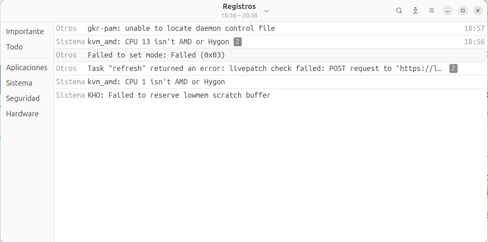
Consulta gràfica de registres a GNOME. Imatge de la presentació.
Registres a Windows
El Visor d’esdeveniments permet consultar els registres d’Aplicació, Seguretat i Sistema i filtrar per data, nivell o identificador. Els nivells inclouen informació, advertiment, error, crític i auditories correctes o fallides. El Gestor de tasques mostra, en canvi, què passa ara, com els processos i el consum de CPU i memòria.
Per obrir aquestes eines, cerca «Visor d’esdeveniments» o «Gestor de tasques» al menú d’inici de Windows. Al Visor pots consultar els registres sense haver d’escriure ordres.
Quan obris el Visor, fixa’t en quatre zones:
Els registres d’Aplicació, Seguretat i Sistema.
La llista d’esdeveniments, amb data, hora, nivell, origen i ID.
Les opcions per cercar o filtrar.
La descripció i els detalls de l’esdeveniment seleccionat.
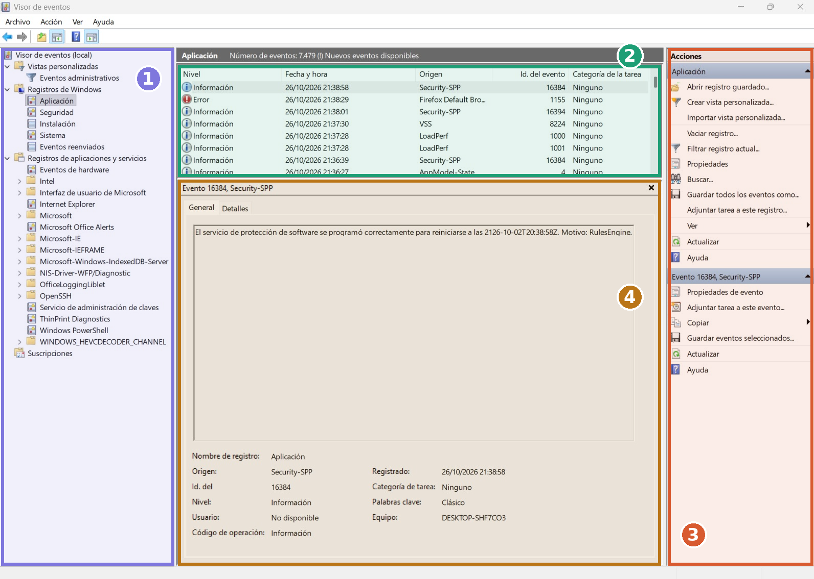
Visor d’esdeveniments: registres, llista d’esdeveniments i detalls. Imatge de la presentació.El Gestor de tasques mostra l’activitat actual. Imatge de la presentació.
ID
Registre
Què pot indicar?
4624
Seguretat
Inici de sessió correcte.
4625
Seguretat
Inici de sessió fallit.
4740
Seguretat
Compte bloquejat.
1102
Seguretat
Registre d’auditoria esborrat.
7036
Sistema
Un servei s’ha iniciat o aturat.
Per cercar el 4625, obre el Visor → Registres de Windows → Seguretat, selecciona Filtrar el registre actual, introdueix 4625 i obre un resultat per consultar-ne els detalls.
De l’esdeveniment a l’avís
1 · Registre Es desa què ha passat.
2 · Regla Es compara el fet amb els criteris definits.
3 · Incidència Si cal, s’investiga.
4 · Alarma Es comunica a la persona responsable.
Altres fonts i gestió d’incidències
Els antivirus registren deteccions, quarantenes i actualitzacions; els tallafocs, tràfic permès o bloquejat; els routers i switches, connexions, errors i canvis de configuració; els proxies, peticions i pàgines bloquejades; i les eines d’accés remot, intents d’entrada. Una regla pot convertir una sèrie de registres en una incidència i generar una alarma.
Un tiquet conserva el número d’incidència, la data, l’equip, el problema, la prioritat, la persona responsable, les accions i l’estat. El procés habitual és registrar, assignar, fer seguiment, resoldre i tancar. GLPI, Jira Service Management i ServiceNow són exemples d’eines de gestió.
Exemple · Del registre a l’alarma
El sistema registra els intents d’accés fallits.
Una regla comprova si hi ha cinc intents en dos minuts.
Si es compleix, es pot obrir una incidència per investigar-la.
La política pot bloquejar temporalment el compte i enviar una alarma per correu a administració. Si és un compte administrador, pot tenir prioritat alta.
Model de fitxa de registre d’una incidència
Aquest exemple mostra com documentar una incidència detectada en un equip de l’aula. Cada camp ajuda a assignar-la i a seguir-ne la resolució:
Camp
Exemple
Núm. incidència
INC-001
Data i hora
26/10/2026 · 10:30
Equip
AULA-PC04
Problema detectat
Diversos intents d’accés fallits
Prioritat
Mitjana
Responsable
Tècnic informàtic
Acció realitzada
Revisar el Visor d’esdeveniments
Estat
Pendent de resolució
La fitxa conserva el responsable, l’estat i les actuacions. A mesura que avança la investigació, cal actualitzar-la fins que la incidència es resolgui i es tanqui.
Un sistema de tiquets centralitza les incidències, permet assignar responsables i seguir les actuacions fins al tancament. GLPI és un exemple de codi obert; també existeixen Jira Service Management i ServiceNow. Aquestes eines poden aplicar bones pràctiques de gestió de serveis com ITIL.
Exemple de consulta de tiquets a GLPI. Imatge de la presentació.
Dificultats i protecció dels registres
Els registres poden estar dispersos entre servidors, aplicacions i dispositius. Un pot guardar una IP i un altre només l’usuari o l’equip, cosa que complica relacionar-los. També poden tenir formats diferents, com text, CSV, XML o bases de dades. Si les hores no estan sincronitzades, es fa difícil reconstruir l’ordre dels fets. A més, poden contenir dades personals o activitat privilegiada. Revisar moltes fonts manualment és lent; una eina centralitzada pot facilitar-ne la gestió.
Cal limitar qui els pot veure, modificar o esborrar, protegir-ne la confidencialitat i poder detectar-ne les alteracions, per exemple amb mètodes criptogràfics. Si les dades són sensibles, pot ser adequat xifrar-les o conservar-les en suports protegits. La conservació i els permisos depenen de la política establerta.
Un examen de pràctica amb el mateix format que la prova real, per entrenar-te abans de l’examen.
Properament. Aquí es publicarà una prova d’examen del RA1 amb les respostes. Les respostes estaran amagades: fes primer l’examen i, quan acabis, prem ▶ Solució a cada pregunta per comprovar-la.
Mentrestant, pots repassar els apunts del RA1 i fer els exercicis que hi ha al final de cada apartat.
Laboratori i treball a classe
Aplicar, comprovar, explicar.
Tres pràctiques avaluables i sis exercicis integrats en les sessions. Els temps formen part del calendari, no s’afegeixen a les 18 hores.
Encàrrec: ubicar un rack amb servidor, NAS, switch i SAI per a una empresa de sis persones. Cal poder fer manteniment sense interrompre el pas ni exposar els equips a visites.
Dades del cas fictici
Sala
Característiques
A · Soterrani, 12 m²
Hi passa una canonada i hi ha antecedents de filtracions. Porta amb pany.
B · Interior, 10 m²
22 °C i 45% HR en la lectura inicial. Climatització, porta amb pany, cap conducció d’aigua visible. Cal comprovar potència elèctrica i resistència del terra.
C · Recepció, 16 m²
Vidriera amb sol de tarda, accés de visitants i sense climatització pròpia.
Guió
5 min: llegiu l’encàrrec i repartiu disseny i registre.
10 min: compareu les tres sales amb quatre riscos justificats. Escolliu-ne una i indiqueu què queda pendent de verificar.
15 min: dibuixeu una planta amb rack, accés de manteniment, circulació de l’aire, entrada elèctrica i cablejat. No cal un plànol constructiu.
15 min: proposeu sis mesures amb risc cobert, responsable i forma de comprovació. Incloeu accés, aigua, foc, temperatura i cablejat.
10 min: defenseu la decisió davant d’una altra parella i anoteu una millora.
5 min: lliureu plànol i informe d’una o dues pàgines.
Evidència: comparació de sales, planta llegible i taula de mesures. No cal fotografiar instal·lacions sensibles del centre.
Criteri de correcció
Punts
Ubicació justificada i comprovacions pendents
3
Entorn, aire i espai de manteniment
3
Protecció física i procediment d’accés
3
Claredat de l’informe
1
T2 · S8 · 60 min · Parelles amb verificació individual · Criteris 1.e, 1.f
Comprovació controlada d’un SAI
Objectiu: demostrar que el SAI alimenta una càrrega autoritzada durant una interrupció de prova i que els avisos i el retorn a xarxa funcionen.
Material: SAI i manual concret, bateria carregada, equip de prova amb dades fictícies, rellotge, programari de gestió i fitxa de càrrega. El docent ha comprovat compatibilitat, presa de terra i estat.
Procediment supervisat. No obriu el SAI, no manipuleu bateries ni quadres elèctrics i no interrompeu equips del centre en servei. Preferiu l’autotest o el procediment de tall previst pel fabricant i executat pel docent preservant la protecció de terra. Si no hi ha condicions adequades, feu anàlisi de registres i deixeu pendent la comprovació real del Criteri 1.e.
10 min: identifiqueu model, W/VA, topologia, càrrega i sortides de bateria. Registreu l’estat inicial i el criteri d’aturada acordat.
30 min: amb el docent, executeu la prova prevista al manual. Anoteu inici, avís de bateria i funcionament de la càrrega. Atureu la prova en el límit acordat, davant d’alarma anòmala o segons el manual. Proveu l’apagada ordenada només si la càrrega i l’entorn de laboratori ho permeten.
15 min: compareu el resultat amb l’objectiu. Cada alumne identifica una alarma, interpreta una lectura i justifica una decisió.
5 min: confirmeu retorn a xarxa, absència d’alarmes i càrrega de bateria. Deixeu l’equip en estat segur.
Camp de registre
Què cal escriure
Model i càrrega
Model, límits W/VA, dispositius i consum mesurat o estimat identificat.
Inici i final
Hora i motiu de finalització; distingiu temps de suport observat i autonomia màxima.
Avisos i servei
Alarma detectada, estat del sistema i incidències.
Retorn
Xarxa restablerta, bateria carregant i servei disponible.
Conclusió
Objectiu assolit o pendent i limitacions de la prova.
Sense prou SAIs, feu estacions rotatives: mentre una parella verifica el dispositiu, les altres interpreten un registre. El docent preveu la comprovació individual.
Criteri de correcció
Punts
Preparació, selecció de càrrega i seguretat
3
Comprovació observada i interpretació d’avisos
4
Mesures i conclusió sense sobreestimar autonomia
2
Restitució i registre final
1
T3 · S16 · 60 min · Individual amb suport per parelles · Criteris 1.g, 1.i
MFA i comprovació de permisos
Objectiu: activar un segon factor en un servei real amb compte de prova autoritzat, verificar l’accés i demostrar que el mínim privilegi es compleix a Windows i Linux.
Preparació prèvia: a S15 el docent deixa els comptes de prova operatius i comprova que el servei admet un autenticador o clau compatible. Es reutilitzen les màquines i carpetes d’E4. No es requereix cap compra ni compte personal de l’alumnat.
5 min: comproveu el bloqueig de pantalla, les actualitzacions i el compte de treball. Anoteu l’estat sense inventar configuracions.
20 min: al servei escollit pel docent, entreu a Seguretat → Autenticació en dos passos o equivalent. Vinculeu l’autenticador, confirmeu un codi i custodieu els codis de recuperació en l’espai autoritzat. Tanqueu sessió i feu una autenticació nova per comprovar el segon factor. No filmeu ni compartiu secrets.
25 min: a Linux i Windows, amb el compte de lectura d’E4, obriu el fitxer permès i intenteu crear un fitxer a la carpeta protegida. Ha de poder llegir i no escriure. Amb el compte editor, comproveu que pot crear un fitxer. Si falla, identifiqueu la causa i repetiu la prova després de corregir-la.
10 min: lliureu la matriu prevista i real, evidències sense secrets i una explicació de quins factors s’han utilitzat. Expliqueu en quin cas la biometria podria desbloquejar un autenticador i quina alternativa caldria oferir.
Lliurament: una captura retallada de MFA activat, confirmació de la nova autenticació observada pel docent, quatre resultats de lectura/escriptura com a mínim (dos per sistema), comprovació del compte editor i una nota de privacitat. Els codis de recuperació no es lliuren.
Si el servei falla: feu la demostració docent amb el compte de prova preparat i documenteu el bloqueig. La configuració individual pendent es completa a una comprovació acordada amb el docent. No es presenta la demostració com a activació individual realitzada.
Criteri de correcció
Punts
MFA configurat i autenticació nova comprovada
3
Permisos efectius contrastats als dos sistemes
4
Interpretació dels factors d’autenticació
1
Justificació del mínim privilegi i qualitat de les evidències
2
E1 · S1–S2 · 20 min per sessió
Conceptes i classificació
S1: per a cada cas identifiqueu actiu, amenaça, vulnerabilitat i propietat CID afectada: (a) portàtil amb dades sense xifrar robat d’un cotxe, (b) pressupost modificat per un compte compartit, (c) servidor apagat per un tall, (d) carpeta de nòmines compartida amb tothom. Proposeu una mesura i un risc residual.
S2: classifiqueu com a física o lògica: rack tancat, ACL, sensor de fuita, MFA, SAI, bloqueig de pantalla, permisos NTFS i ventilació. Expliqueu per què física/lògica no és el mateix que activa/passiva.
E2 · S7 · 35 min de treball + 15 min de correcció
Dimensionament i elecció del SAI
Cas fictici de consolidació, diferent de l’exemple resolt: els consums i les autonomies següents són dades donades per calcular, no característiques dels equips comercials citats als apunts.
La càrrega és servidor 250 W + NAS 60 W + switch 30 W + router 15 W. FP agregat = 0,90, hipòtesi del problema. Cal deixar lliure el 30% de la capacitat nominal i mantenir el servei durant almenys 7 minuts.
Model fictici
Capacitat
Autonomia a 355 W, dada facilitada
A
650 VA / 360 W
4 min
B
1.000 VA / 600 W
9 min
C
1.500 VA / 900 W
16 min
Calculeu W i VA totals i els dos mínims de selecció.
Determineu quin és el model mínim suficient. Justifiqueu el rebuig o l’acceptació de cada model.
El responsable vol afegir una impressora làser. Quines dades falten i per què no la connectaríeu automàticament?
Una etiqueta diu 230 V i 0,5 A. Quina potència aparent indica? Podeu afirmar els W sense conèixer FP?
Expliqueu què canviaria si el NAS quedés connectat fora del SAI.
E3 · S9 · 35 min de treball + 15 min de correcció
Auditoria ràpida de seguretat física
Situació: rack obert al costat d’una finestra, una entrada d’aire tapada amb caixes, SAI amb avís de bateria, switch fora del SAI, cable travessant la porta i registre de visites buit.
Identifiqueu sis riscos i la propietat CID afectada.
Prioritzeu-los amb probabilitat i impacte d’1 a 3, justificats.
Proposeu una actuació immediata i una de planificada per als tres primers.
Indiqueu quines tasques pot fer l’alumnat amb autorització i quines requereixen manteniment especialitzat.
Prepareu una prova per confirmar cadascuna de les tres correccions.
E4 · S12–S13 · Laboratori preparat pel docent
Permisos Linux, NTFS i política de contrasenyes
S12 · Linux, 25 minuts
Utilitzeu exclusivament una VM de laboratori amb instantània. Si els noms següents ja existeixen, el docent assigna un prefix nou. Els usuaris no necessiten contrasenya per a les proves amb sudo -u. El paquet d’eines ACL ha d’estar preparat.
El 2 de 2770 activa setgid al directori perquè els nous elements heretin el grup. Aquest guió dona l’ACL al fitxer existent i no estableix una ACL per defecte. Registreu els resultats esperats i observats de les tres últimes ordres.
S12 · Windows, 20 minuts
En una VM amb comptes locals de prova ja preparats, creeu C:\RA1\Projecte en un volum NTFS.
Propietats → Seguretat → Opcions avançades: reviseu les entrades heretades. Manteniu SYSTEM i Administradors. Si hi ha accés ampli heretat, convertiu l’herència a entrades explícites en aquesta carpeta de prova i retireu només les entrades àmplies identificades.
Assigneu «Modificar» al compte editor i «Lectura i execució» al lector. Creeu un fitxer de dades fictícies.
Amb cada compte, proveu lectura i creació d’un fitxer. Compareu amb Accés efectiu. No modifiqueu permisos de carpetes del sistema.
Últims 10 min: lliureu matriu de permisos i proves, amb noms ficticis. La preparació inicial ocupa els primers 5 min de la sessió.
S13 · GPO guiada, 30 minuts + 10 de comprovació
Després de 20 minuts de teoria, el docent mostra un domini de laboratori preparat. S’anota la política inicial i es treballa només sobre comptes de prova.
Obriu la consola d’administració de directives de grup. Identifiqueu la política efectiva de comptes de domini abans d’editar.
Localitzeu Configuració de l’ordinador → Directives → Configuració de Windows → Configuració de seguretat → Directives de compte.
Proposeu longitud, historial, caducitat i limitació d’intents. El docent aplica els valors compatibles amb la versió i l’abast de domini.
Comproveu la política amb Get-ADDefaultDomainPasswordPolicy si el mòdul ActiveDirectory està disponible. Per a comptes amb política granular, consulteu també la resultant.
Amb un compte de prova sense política granular, proveu una contrasenya massa curta i una de vàlida, sense revelar-les a l’informe. Registreu resultat i hora. Restaureu la configuració acordada.
Alternativa si no hi ha domini: demostració docent gravada o política local en una edició compatible. Cal indicar que una política local no demostra configuració d’una GPO de domini. No es força un bloqueig que deixi el laboratori sense accés.
E5 · S14 · 20 min + 10 min de debat
Errors biomètrics i proporcionalitat
Un sistema accepta 2 de 2.000 intents d’impostors i rebutja 15 de 500 intents legítims. Calculeu FAR i FRR. Expliqueu què pot passar si es fa més estricte el llindar.
Una empresa vol empremtes per entrar a una oficina on ja funciona una targeta. Indiqueu dos avantatges possibles de la biometria, dos inconvenients i tres preguntes que cal resoldre abans d’implantar-la. Proposeu una alternativa per a qui no pugui utilitzar el sensor.
E6 · Registres · Contingut 1.9
Comptes, registres i informe d’incidència
Després d’una demostració docent de 10 minuts, treballeu en VMs amb dades fictícies. Cal distingir inventari de comptes i registre d’activitat.
10 min: inventarieu els dos comptes d’E4: rol, estat, responsable de prova, data de revisió i accés justificat. Identifiqueu un accés que s’hauria de retirar en una baixa.
10 min: comproveu bloqueig automàtic, compte sense privilegis innecessaris i estat d’actualitzacions. Feu una millora reversible autoritzada, com configurar el bloqueig de pantalla de la VM, i comproveu-la.
15 min: examineu un registre local amb el docent. A Windows, filtreu Seguretat per un esdeveniment 4625 si l’auditoria el genera. A Linux, consulteu journalctl --since "15 minutes ago" amb permisos adequats i localitzeu una acció coneguda. No feu atacs ni repetiu contrasenyes fins a bloquejar comptes.
15 min: redacteu l’informe a partir del conjunt fictici següent i lliureu evidències anonimitzades de la comprovació del dispositiu.
Determineu què és un fet i què és una hipòtesi, quin accés s’ha denegat correctament i què cal investigar. Proposeu prioritat, responsable, actuació i comprovació de tancament. El fitxer fictici és una representació didàctica, no el format literal d’un registre del sistema.
Lliurament: inventari de dos comptes, evidència inicial/final d’una mesura de protecció i fitxa d’incidència sense dades personals ni secrets.
Activitats de les presentacions · Part V
Pràctiques de permisos i umask
Aquestes activitats provenen de la presentació de permisos. Les solucions serveixen per comprovar la feina i estudiar. Consulta també la lliçó de permisos.
1. Crear fitxers amb diferents umask
Estableix umask 022, crea capitol5 i, dins, el fitxer fic1 i el directori dir1. Canvia a umask 027 i crea fic2 i dir2 al mateix nivell. Compara els permisos i comprova si els primers han canviat.
Solució per estudiar
$ umask 022
$ mkdir capitol5
$ cd capitol5
$ ls -l
$ ls -ld .
$ umask
$ touch fic1
$ mkdir dir1
$ ls -l
$ umask 027
$ touch fic2
$ mkdir dir2
$ ls -l
$ ls -ld dir1 dir2
Sense ACL per defecte, fic1 és 644 i dir1 755; fic2 és 640 i dir2 750. Canviar la umask no modifica els elements ja creats. ls -ld . mostra els permisos de la carpeta actual; ls -ld dir1 mostra els de dir1, mentre que ls -l dir1 mostra el contingut.
2. Permisos d’un directori i fitxer ocult
Afegeix rwx a altres usuaris sobre dir1 amb notació simbòlica i prova una assignació octal a dir2. Crea una carpeta de prova i un fitxer ocult .secret; deixa-li només lectura per al propietari. Amb un altre compte de prova, comprova si el pot llegir o eliminar i justifica el resultat.
El valor 007 és una de les solucions de l’exemple: deixa propietari i grup sense permisos i dona rwx als altres. El 400 impedeix als altres llegir el fitxer, però eliminar-lo depèn dels permisos d’escriptura i execució del directori que el conté, així com de possibles restriccions addicionals. Si la carpeta /tmp/usuari-prova s’ha creat amb umask 027 i no té ACL per defecte, habitualment queda amb 750: un segon usuari que no pertanyi al grup no pot travessar-la, llegir el fitxer ni eliminar-lo. Amb una carpeta que sí que li permeti travessar-la, el permís 400 continua impedint-li llegir el fitxer; si a més té w i x a la carpeta, podria eliminar-lo, subjecte a restriccions com el bit sticky. Comprova els permisos reals amb comptes de laboratori.
3. Directoris i fitxers
Amb umask 002, crea docpersonal amb permisos 700 i les subcarpetes fica, ficb, ficc i ficd. Assigna’ls, respectivament, 755, 700, 750 i 777. A fica crea prova.txt i compara els permisos 600 i 644.
Solució per estudiar
$ cd ~/capitol5
$ pwd
$ umask 002
$ mkdir docpersonal
$ chmod 700 docpersonal
$ cd docpersonal
$ mkdir fica ficb ficc ficd
$ chmod 755 fica
$ chmod 700 ficb
$ chmod 750 ficc
$ chmod 777 ficd
$ ls -ld fica ficb ficc ficd
$ touch fica/prova.txt
$ ls -l fica/prova.txt
$ chmod 600 fica/prova.txt
$ ls -l fica/prova.txt
$ chmod 644 fica/prova.txt
$ ls -l fica/prova.txt
Amb umask 002 i sense ACL per defecte, el fitxer acabat de crear és habitualment 664. Després, 600 dona lectura i escriptura només al propietari; 644 afegeix lectura al grup i als altres. El directori pare docpersonal té 700, de manera que els altres no el poden travessar encara que una subcarpeta o fitxer mostri permisos més amplis.
Part III · SAI
Exercicis resolts de SAI
Relacionats amb la lliçó de SAI. Els resultats d’autonomia són estimacions teòriques; la durada real es comprova amb la fitxa del fabricant.
Energia i autonomia
Una bateria de 12 V i 9 Ah alimenta una càrrega de 500 W. Suposem un factor d’energia útil del 90 % i que el SAI admet la càrrega en W i VA. Calcula l’energia teòrica, l’energia útil i els minuts.
Solució per estudiar
Pas 1 · Energia teòrica
1 × 12 V × 9 Ah = 108 Wh
Pas 2 · Energia útil estimada
108 Wh × 0,90 = 97,2 Wh
Pas 3 · Autonomia teòrica
(97,2 Wh ÷ 500 W) × 60 ≈ 11,7 minuts
És una estimació, no una durada garantida.
Un lloc de treball
Un ordinador consumeix 220 W, el monitor 30 W i el router 10 W. Amb marge del 25 % i FP 0,7, tria entre A: 500 VA / 300 W i B: 650 VA / 360 W.
Solució per estudiar
Pas 1 · Consum real
220 + 30 + 10 = 260 W
Pas 2 · Aplicar el marge del 25 %
260 × 1,25 = 325 W
Pas 3 · Calcular els VA
325 ÷ 0,7 ≈ 464,3 VA
Pas 4 · Comparar els models
El model A no compleix perquè 300 W és inferior a 325 W. El model B compleix els dos límits de potència; cal verificar-ne també l’autonomia.
Per estimar l’autonomia s’utilitzen els 260 W reals, no els 325 W amb marge.
Comparar models
Busca tres SAI per a 350 W reals, amb marge del 25 %, FP suposat 0,7, autonomia mínima de 10 minuts i tres preses compatibles amb bateria. Anota marca, model, tecnologia, W, VA, minuts a 350 W, preses, preu, data i font del fabricant. Justifica quins compleixen i què queda pendent de confirmar.
Dada per comparar
Model A
Model B
Model C
Marca, model i tipus
—
—
—
Potència: VA i W
—
—
—
Minuts a 350 W i font
—
—
—
Preses amb bateria i USB
—
—
—
Preu, data i enllaç
—
—
—
Compleix? Què falta confirmar?
—
—
—
Completa la comparació amb els enllaços o captures de les fonts i una justificació de tres frases.
Criteri de correcció
El mínim de potència és 350 × 1,25 = 437,5 W i 437,5 ÷ 0,7 = 625 VA. A més, cal comprovar almenys 10 minuts a la càrrega real i les tres preses amb bateria: complir només W i VA no acredita l’autonomia.
La carpeta Projecte és del grup desenvolupament. Laia ha d’entrar i veure’n el contingut, sense crear, modificar ni eliminar, i sense afegir-la al grup.
Si també s’ha d’heretar als fitxers i subcarpetes: icacls C:\Projecte /grant "laia:(OI)(CI)RX". Revisa també les ACL dels fitxers i de les subcarpetes: la lectura i el pas a la carpeta, per si sols, no anul·len altres permisos d’escriptura que Laia ja pugui tenir sobre elements existents. Comprova els permisos efectius i que cap altra entrada li concedeixi drets més amplis.
Una excepció per a Maria
El grup alumnat només llegeix treball.txt, però Maria necessita modificar-ne el contingut. Com ho faries sense donar aquest dret a tot el grup?
Cal comprovar que la màscara permet l’escriptura. A Windows, si Maria ja rep lectura del grup, una entrada específica pot afegir escriptura sense concedir-li modificar complet:
Comprova l’accés efectiu i les entrades existents amb un compte de prova.
Matriu d’accés d’un institut
Els recursos són Notes, Material d’aula, Secretaria i Web. El professorat edita notes i material; l’alumnat consulta material i web; secretaria edita documents administratius; direcció consulta notes i material i edita secretaria i web. Un alumne delegat necessita editar una carpeta concreta del material d’aula. Identifica subjectes i recursos, completa la matriu, escriu dues normes de política i indica l’excepció que podria requerir una ACL.
Solució orientativa
Subjecte
Notes
Material
Secretaria
Web
Professorat
L/E
L/E
—
L
Alumnat
—
L
—
L
Secretaria
—
—
L/E
L
Direcció
L
L
L/E
L/E
L és lectura, L/E lectura i escriptura i — cap accés. Dues normes possibles són assignar permisos segons la funció de cada grup i revisar periòdicament els accessos. Una ACL pot donar a un delegat permís d’edició en una carpeta concreta sense ampliar l’accés a tot l’alumnat.
Política d’una empresa
Una empresa té els grups direcció, comptabilitat, comercial, informàtica i personal general, i les carpetes Nòmines, Factures, CRM, Còpies de seguretat i Documents comuns. Cada grup necessita els accessos següents:
Direcció: consulta nòmines, factures i CRM; crea i modifica documents comuns.
Comptabilitat: prepara i actualitza nòmines i factures; treballa amb documents comuns.
Comercial: gestiona el CRM i treballa amb documents comuns; no necessita consultar nòmines ni factures.
Informàtica: gestiona les còpies de seguretat i consulta documents comuns; no necessita accedir habitualment a les altres carpetes.
Personal general: consulta, crea i modifica documents comuns.
Un treballador de comercial necessita consultar temporalment una factura concreta per resoldre una incidència. Identifica subjectes i recursos, assigna els permisos, escriu una política en tres frases i indica on cal una excepció ACL.
Solució orientativa
Grup
Nòmines
Factures
CRM
Còpies
Comuns
Direcció
L
L
L
—
L/E
Comptabilitat
L/E
L/E
—
—
L/E
Comercial
—
—
L/E
—
L/E
Informàtica
—
—
—
L/E
L
Personal general
—
—
—
—
L/E
La política aplica mínim privilegi, permisos per grups i revisió periòdica. L’excepció de lectura s’atorga al recurs concret, es documenta i es retira o revisa en acabar la necessitat.
09:12 sshd: Accepted password for pau
10:01 sshd: Failed password for admin from 185.x.x.x
10:02 sshd: Failed password for admin from 185.x.x.x
10:03 sshd: Failed password for admin from 185.x.x.x
10:04 sshd: Failed password for admin from 185.x.x.x
10:06 sudo: anna : COMMAND=/usr/sbin/useradd test
Classifica els fets, indica quines ordres utilitzaries, quines dades falten i quina resposta proposaries.
Solució orientativa
La connexió de Pau pot ser normal. Els quatre intents fallits sobre admin són una incidència que pot generar una alarma segons la política; la creació d’un usuari amb sudo s’ha de comprovar. Cal revisar l’origen, l’equip, l’hora, el compte afectat i si la creació estava autoritzada. Per investigar millor falten, entre altres dades, la IP completa, una possible geolocalització aproximada, el propietari del compte i si l’acció amb sudo tenia un tiquet autoritzat. Si el procediment ho preveu, es pot bloquejar temporalment l’accés i avisar l’administració.
Les rutes poden variar segons la configuració del sistema.
2. Esdeveniments de Windows
09:45 ID 4624 Inici correcte: carla
10:12 ID 4625 Inici fallit: admin
10:13 ID 4625 Inici fallit: admin
10:14 ID 4625 Inici fallit: admin
10:15 ID 4740 Compte admin bloquejat
10:20 ID 1102 Registre d’auditoria esborrat
Identifica els fets normals, les incidències i la possible alarma crítica. On els consultaries?
Solució orientativa
El 4624 de Carla pot ser normal. Els 4625 repetits justifiquen investigar; el 4740 mostra el bloqueig del compte. El 1102 indica que s’ha esborrat el registre d’auditoria i pot ser una alarma crítica si no hi havia manteniment autoritzat. Al Visor d’esdeveniments, ves a Registres de Windows → Seguretat, filtra els ID i compara usuari, equip, hora i origen.
M0226 · Seguretat informàtica
RA1 · Criteris i continguts
La qualificació segueix la programació del mòdul: Pt 20%, Pe 70% i Gr 10%, amb les condicions de lliurament i notes mínimes establertes.
Criteris d’avaluació del mòdul
Criteri
Descripció
Evidència
1.a
Valora la importància de mantenir la informació segura.
E1 i Pe1
1.b
Descriu les diferències entre seguretat física i lògica.
E1 i Pe1
1.c
Defineix les característiques de la ubicació física i condicions ambientals dels equips i servidors.
T1
1.d
Identifica la necessitat de protegir físicament els sistemes informàtics.
T1 i E3
1.e
Verifica el funcionament dels sistemes d'alimentació ininterrompuda.
T2: verificació observada
1.f
Selecciona els punts d'aplicació dels sistemes d'alimentació ininterrompuda.
T2 i E2
1.g
Esquematitza les característiques d'una política de seguretat basada en llistes de control d'accés.
T3 i E4
1.h
Valora la importància d'establir una política de contrasenyes.
E4: política de contrasenyes
1.i
Valora els avantatges que suposa la utilització de sistemes biomètrics.
E5 i reflexió T3
Continguts
Contingut
Descripció
1.1
Ubicació física i condicions ambientals dels equips i servidors.
1.2
Protecció física dels sistemes informàtics.
1.3
Els sistemes d'alimentació ininterrompuda.
1.4
Aplicació dels sistemes d'alimentació ininterrompuda.
1.5
Polítiques de seguretat basades en llistes de control d'accés.
1.6
Polítiques de contrasenyes; sistemes biomètrics.
1.7
Mecanismes de seguretat d'accés al sistema.
1.8
Permisos i drets d'usuaris.
1.9
Gestió de l'inventari dels registres d'usuaris, incidències i alarmes.
Criteris del centre · Activitat independent
Criteri
Descripció
*1.j
Aplica els procediments de la competència digital 4.1 Protegir els dispositius.
*1.k
Aplica els procediments de la competència digital 4.2 Protegir les dades personals i la privacitat.
Consulta les activitats de competència digital: feina autònoma, lliurament separat i validació pròpia. No formen part de la prova del RA ni dels seus pesos.


![Exemple d’una llista de tiquets a GLPI]()